Cox Proportional Hazards in R: A Practical Reference
1 Introduction
This notebook is a practical guide to running a Cox proportional hazards analysis in R. It is written for someone who already knows R and basic biostatistics, but wants a solid refresher on the survival-analysis workflow: how to set up the data, inspect survival curves, fit Cox models, check the main assumptions, and refine the model when something looks off.
The examples use the Veterans Administration lung cancer trial dataset, a well-known teaching dataset that is compact enough to work through end to end but rich enough to surface the main issues that come up in real survival analysis. The goal here is not just to fit one model for this dataset, but to walk through a reusable framework that can be adapted to other time-to-event projects.
This notebook is designed as a refresher and self-reference for anyone coming back to survival analysis after a long gap: part syntax reminder, part workflow guide, and part statistical refresher.
2 Setup and Data Import
Start by loading the core packages for survival modelling, plotting, and data wrangling. The example dataset comes from the survival package and is relabeled slightly to make the output easier to read.
Code
# Load required librarieslibrary(survival) # Core survival analysis toolslibrary(survminer) # Visualization and diagnosticslibrary(dplyr) # Data wranglinglibrary(ggplot2) # Plottinglibrary(broom) # Tidying model outputlibrary(splines) # Splines for flexible modelinglibrary(forestmodel) # Forest plots for Cox models
TipWhy These Packages?
survival: Core package for survival analysis in R. Provides Surv() to construct survival objects and coxph() for Cox models.
survminer: High-level visualization tools for survival curves and diagnostics (e.g., ggsurvplot(), ggcoxdiagnostics()).
splines: Lets you model non-linear relationships with natural splines (for example, ns(age, df = 3)).
ggplot2: Used to build layered, customizable plots — often integrated with survminer.
dplyr: Enables clean and readable data manipulation (e.g., mutate(), filter()).
broom: Tidies model outputs into data frames (useful for summaries, tables, and downstream analysis).
Next, load the dataset and do a small amount of cleanup so the treatment labels are readable in plots and model output.
Code
# Load the datasetveteran <- survival::veteran %>%mutate(trt =factor(trt,levels =c(1, 2),labels =c("Standard", "Experimental")))# Peek at the structure and summary# glimpse(veteran)# summary(veteran)
NoteDataset Preview
It is worth looking at the first few rows before doing anything else, just to confirm the basic structure and coding.
Code
head(veteran)
trt celltype time status karno diagtime age prior
1 Standard squamous 72 1 60 7 69 0
2 Standard squamous 411 1 70 5 64 10
3 Standard squamous 228 1 60 3 38 0
4 Standard squamous 126 1 60 9 63 10
5 Standard squamous 118 1 70 11 65 10
6 Standard squamous 10 1 20 5 49 0
Variable Summary:
The main variables used in this guide are summarised below.
Variable
Type
Description
Notes
trt
Factor
Treatment group: 1 = Standard, 2 = Test
Relabeled to "Standard" and "Experimental"
celltype
Factor
Histologic type of lung cancer: squamous, small cell, adeno, large
Used later in the fuller multivariable models
time
Numeric
Survival time in days
Outcome variable in the Surv() object
status
Numeric
Event indicator: 1 = died, 0 = censored
Used to define survival endpoint
karno
Numeric
Karnofsky performance score (proxy for baseline health status)
A strong clinical predictor; included later in the fuller models
diagtime
Numeric
Time from diagnosis to study entry (in months)
Possibly useful in extended time-dependent models
age
Numeric
Patient age (in years)
Treated as continuous; checked for linearity and splines
prior
Numeric
Number of prior therapies (0 or 10)
Binary variable: 0 = none, 10 = prior treatment
3 Exploratory Survival Analysis
A good survival-analysis workflow starts with a non-parametric look at the data. Kaplan-Meier curves are the easiest way to inspect survival patterns before moving on to regression models.
NoteParametric, Non-Parametric, and Semi-Parametric Models
When coming back to survival analysis after a gap, it helps to remember the basic distinction:
Non-parametric methods such as Kaplan-Meier curves and the log-rank test do not assume a particular shape for the survival distribution. They are useful for initial exploration, visual comparison of groups, and quick checks before moving to regression.
Parametric survival models assume a specific distribution for survival times (for example Weibull or exponential). They can be powerful, especially for prediction or extrapolation, but only when that distribution is a reasonable fit for the data.
Semi-parametric models sit in between. The Cox model does not specify the baseline hazard, but it does assume that covariates act multiplicatively on the hazard and that those effects are proportional over time.
In practice: - use Kaplan-Meier and log-rank methods to get oriented - use Cox models when you want adjusted hazard ratios - use parametric models when you have a good reason to assume a survival distribution or need extrapolation beyond the observed follow-up
3.1 Kaplan-Meier Survival Curve
The first step is to estimate the survival curves for each treatment group using the Kaplan-Meier estimator.
Code
# Create the survival objectsurv_obj <-Surv(time = veteran$time, event = veteran$status)# Fit Kaplan-Meier curve stratified by treatmentkm_fit <-survfit(surv_obj ~ trt, data = veteran)# View basic survival summary# summary(km_fit)
TipSurvival Summary Truncated for Clarity
The full Kaplan-Meier summary includes hundreds of time points. For readability, we display only the first few rows per treatment group.
This is usually the right place to start because it gives you a quick feel for:
the overall pace of events
whether the groups separate at all
whether there are obvious crossing curves or late divergence
how much censoring you are dealing with
It is also a good sense check before fitting a Cox model. If the Kaplan-Meier curves already look strange, heavily crossed, or unstable at the tail, that is a signal to be careful when you move into regression and diagnostics.
Code
# Plot the KM curveggsurvplot( km_fit,data = veteran,conf.int =TRUE,pval =TRUE,pval.size =4,risk.table =TRUE,risk.table.title ="Number at Risk",risk.table.col ="strata",risk.table.y.text.col =TRUE,risk.table.fontsize =4,legend.title ="Treatment Group",legend.labs =c("Standard", "Experimental"),xlab ="Time (days)",ylab ="Survival Probability",palette =c("#A569BD", "#45B39D"),title ="Kaplan-Meier Survival Curve: VA Lung Cancer Trial",ggtheme =theme_minimal(base_size =13) +theme(legend.position ="top",plot.title =element_text(hjust =0.5, face ="bold"),panel.grid.major =element_line(color ="grey80", linewidth =0.4),panel.grid.minor =element_line(color ="grey90", linewidth =0.2) ),tables.theme =theme( # Trying to tweak the risk tableaxis.text.y =element_text(size =10, margin =margin(r =12), lineheight =2) ))
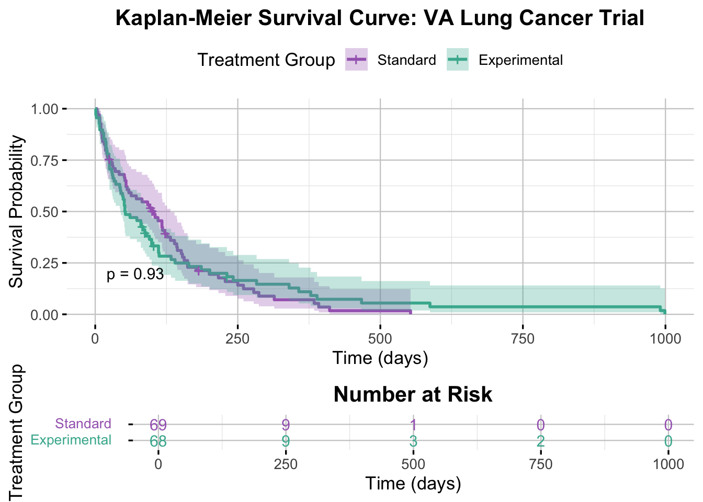
Interpretation of the Kaplan-Meier Plot
The Kaplan-Meier curves are the first sense check. Here, both treatment groups show a steep drop in survival early in follow-up, which is what you would expect in a cohort with advanced lung cancer. The curves and their confidence bands overlap heavily, so there is no obvious visual signal that one treatment is outperforming the other. The log-rank test backs that up with a p-value of 0.93.
NoteHow to Read a Kaplan-Meier Plot
X-axis: time
This is follow-up time, here measured in days.
Y-axis: survival probability
This is the estimated probability of surviving beyond a given time point.
Step drops
Each downward step corresponds to an event. In this dataset, the event is death.
Shaded bands
These are 95% confidence intervals. They usually widen later in follow-up because fewer people remain at risk.
Risk table
The table underneath the plot shows how many participants are still under observation and event-free at each time point. This matters because the tail of the curve becomes less stable once only a few patients remain.
Log-rank p-value
This gives a formal comparison of the two curves. A small p-value suggests that the survival experience differs between groups; a large p-value suggests that any visible difference could easily be due to chance.
3.2 Log-Rank Test
The log-rank test is the standard unadjusted test for comparing survival curves between groups.
NoteWhat the Log-Rank Test Is Actually Doing
At each event time, the log-rank test compares how many events were observed in each group with how many would be expected if the groups had the same survival experience. It then aggregates those differences across follow-up into a single chi-square test statistic.
A few useful reminders: - it is a group comparison, not a regression model - it is unadjusted, so it ignores other covariates - it is most natural when the proportional hazards assumption is at least roughly plausible - it tells you whether the curves differ overall, but not by how much in an adjusted sense
Code
# Perform the log-rank testlog_rank_test <-survdiff(surv_obj ~ trt, data = veteran)log_rank_test
Call:
survdiff(formula = surv_obj ~ trt, data = veteran)
N Observed Expected (O-E)^2/E (O-E)^2/V
trt=Standard 69 64 64.5 0.00388 0.00823
trt=Experimental 68 64 63.5 0.00394 0.00823
Chisq= 0 on 1 degrees of freedom, p= 0.9
Code
# Extract the p-value1-pchisq(log_rank_test$chisq, df =length(log_rank_test$n) -1)
[1] 0.9277272
NoteQuick Refresher: Chi-Square and Degrees of Freedom
For a two-group log-rank test, the chi-square statistic measures how far the observed event counts are from what would be expected under equal survival, and the degrees of freedom are 1. A larger chi-square gives a smaller p-value.
Interpretation of the Log-Rank Test Results
In this example, the log-rank test gives a chi-square statistic of 0.008 with 1 degree of freedom and a p-value of 0.93. That is exactly what the Kaplan-Meier plot suggested: the two treatment groups have very similar unadjusted survival experience.
This is useful, but it is only a starting point. The log-rank test does not adjust for other clinical variables, and it does not tell you how large the treatment effect is after adjustment. That is where the Cox model becomes more useful.
NoteWhy Keep Going After a Non-Significant Log-Rank Test?
A non-significant log-rank test is not a reason to stop.
A Cox model is still useful because it lets you: - adjust for other covariates - estimate hazard ratios and confidence intervals - check whether the treatment result changes once baseline differences are taken into account - investigate assumptions, non-linearity, and interaction terms
In other words, the log-rank test answers a narrow unadjusted question. The Cox model gives you a much fuller framework for explanation and interpretation.
3.3 Why Proceed with the Cox Model?
Even when the Kaplan-Meier plot and log-rank test show little difference between groups, the next step is often still a Cox model. That gives you a way to adjust for other predictors, quantify effects with hazard ratios, and start checking whether the model assumptions are reasonable.
Adjust for other clinical predictors
Estimate hazard ratios with confidence intervals
Check proportional hazards and functional form
Explore whether interactions are worth considering
Thus, we proceed with a Cox model to assess whether treatment effects become more apparent after adjusting for relevant clinical factors.
4 Cox Regression Models
At this point, the workflow shifts from unadjusted description to regression modelling. The Cox model is the standard tool when you want to relate survival to multiple covariates without specifying the baseline hazard.
The main assumptions to keep in mind are: - proportional hazards: effects are constant over time on the hazard-ratio scale - sensible functional form for continuous predictors - reasonable coding of categorical variables
The easiest way to build confidence in the model is to start simple, then add complexity one step at a time and check what changes.
NoteUnderstanding the Cox Proportional Hazards Model
The Cox model relates covariates to the hazard of the event over time without having to specify the baseline hazard.
The key quantity is the hazard, which you can think of as the instantaneous risk of the event at time t, given survival up to that point.
In practice, the main reason to use a Cox model is that it lets you:
estimate hazard ratios for multiple predictors at once
The key assumption is proportional hazards: hazard ratios are assumed to be constant over time. That assumption needs to be checked, especially once the model becomes more complex.
The core outputs to pay attention to are: - coefficients and hazard ratios - confidence intervals - Wald, likelihood ratio, and score tests - concordance - residual-based diagnostics
4.1 Univariable Models
In this section, we fit a series of univariable Cox models to assess the effect of individual covariates on survival. This step helps us explore the independent contribution of each variable before building more complex multivariable models.
4.1.1 Treatment Group Only
We begin with a univariable Cox model that includes only the treatment variable (trt). This allows us to assess the effect of treatment on survival without adjusting for any other covariates.
Code
# Fit the Cox Proportional Hazards modelcox_model <-coxph(surv_obj ~ trt, data = veteran) # Where trt is a binary treatment variable with levels Standard and Experimental# Summarize the modelsummary(cox_model)
Call:
coxph(formula = surv_obj ~ trt, data = veteran)
n= 137, number of events= 128
coef exp(coef) se(coef) z Pr(>|z|)
trtExperimental 0.01774 1.01790 0.18066 0.098 0.922
exp(coef) exp(-coef) lower .95 upper .95
trtExperimental 1.018 0.9824 0.7144 1.45
Concordance= 0.525 (se = 0.026 )
Likelihood ratio test= 0.01 on 1 df, p=0.9
Wald test = 0.01 on 1 df, p=0.9
Score (logrank) test = 0.01 on 1 df, p=0.9
NoteInterpretation of Cox Table
Term
Value
What It Means
coef
0.01774
This is the log hazard ratio (log(HR)) comparing the Experimental group to Standard. Close to 0 means almost no effect.
exp(coef)
1.01790
This is the hazard ratio (HR). A value of 1.018 means the hazard (risk of death) is 1.8% higher in the Experimental group compared to Standard. However, at this level the value is not meaningful.
se(coef)
0.18066
The standard error. This gives us the variability around the estimate.
z
0.098
The Wald test statistic. The low value implies no meaningful signal.
p-value
0.922
Far above the conventional 0.05 threshold. This is very strong evidence against any meaningful treatment effect.
95% CI
(0.7144, 1.45)
Wide confidence interval, spanning both below and above 1—so we can’t rule out either harm or benefit.
Concordance The C-index, or concordance statistic is the probability that a randomly chosen subject who died earlier had a higher predicted risk. At 0.525 it is close to random chance, suggesting poor predictive power.
Interpretation of the Cox Model Results
The univariable Cox proportional hazards model found no statistically significant difference in survival between the control and intervention groups (HR = 1.02, 95% CI: 0.71–1.45, p = 0.92). The hazard ratio near 1 suggests little to no effect of the treatment on mortality risk. The wide confidence interval spans both potential benefit and harm, highlighting uncertainty in the estimate. The concordance statistic (0.525) indicates the model’s discriminative ability is only marginally better than chance. Overall, this analysis offers no evidence that the intervention improves survival in this sample.
Code
# Use ggadjustedcurves for plotting adjusted survival curves directly from the Cox modelggadjustedcurves( cox_model, # The fitted Cox modeldata = veteran, # The original data used to fit the modelvariable ="trt", # The variable to plot adjusted curves formethod ="average", # Method for adjusting (average effect of other covariates)conf.int =TRUE,legend.labs =c("Standard", "Experimental"),legend.title ="Treatment Group",risk.table =TRUE, # Include the risk tablerisk.table.title ="Number at Risk",xlab ="Time (days)",ylab ="Adjusted Survival Probability",title ="Cox Model Adjusted Survival Curves",palette =c("#A569BD", "#45B39D"),ggtheme =theme_minimal(base_size =13) +theme(legend.position ="top",plot.title =element_text(hjust =0.5, face ="bold"),panel.grid.major =element_line(color ="grey80", linewidth =0.4),panel.grid.minor =element_line(color ="grey90", linewidth =0.2) ),tables.theme =theme(axis.text.y =element_text(size =10, margin =margin(r =12), lineheight =2) ))
TipWhy use ggadjustedcurves() for this plot
For plotting survival curves adjusted for covariates from a Cox Proportional Hazards model, the ggadjustedcurves() function from the survminer package offers one of the most direct and statistically appropriate approaches—particularly as model complexity increases.
Statistical validity: ggadjustedcurves() uses the fitted cox_model to compute adjusted survival probabilities for the variable of interest (in this case, trt). When method = “average” is specified (the default when covariates are present), it returns marginal estimates—appropriate for interpreting average treatment effects across the population. In our simpler model (~ trt), it effectively plots the model-predicted survival curve for each treatment group.
Robustness: This function is purpose-built for adjusted curve plotting and avoids many of the pitfalls seen with manually passing newdata to survfit() and plotting with ggsurvplot(), such as misaligned strata or legend issues. It correctly associates the model, the data, and the plot elements, including the risk table.
Simplicity: It eliminates the need for manually constructing a new_trt data frame or calling survfit() separately, resulting in cleaner, more reproducible code—particularly useful in collaborative or long-term projects.
Interpretation of the Adjusted Survival Curves
The Cox-adjusted survival curves for the Standard and Experimental groups are nearly identical, indicating no meaningful difference in predicted survival probabilities between the treatment arms. This visual overlap aligns with the Cox model’s hazard ratio, which was close to 1 and not statistically significant. Together, the model output and adjusted curves reinforce the conclusion that the experimental regimen had no observable effect on survival in this cohort.
NoteWhy do the lines overlap?
The survival curves for the Standard and Experimental groups overlap almost entirely in this plot. This is because the Cox proportional hazards model found no significant difference between the two groups in terms of survival (hazard ratio ≈ 1, p = 0.922). As a result, the model-predicted curves are nearly identical. The faint visibility of the Standard group line is due to it being directly behind the Experimental group line.
Model Diagnostics
Before interpreting the results of a Cox proportional hazards model, it’s important to ensure that the model’s assumptions are met. The two key assumptions are:
The proportional hazards (PH) assumption: The effect of each covariate on the hazard is constant over time.
Linearity of continuous covariates: Continuous covariates are assumed to have a linear relationship with the log hazard.
Violations of these assumptions can undermine the model’s predictive utility and lead to misleading conclusions.
In this section, we use the following diagnostic tools to assess model adequacy:
Schoenfeld residuals to test the PH assumption.
Martingale residuals to check for non-linearity and outliers.
Functional form checks, particularly for continuous covariates like age.
Where needed, we apply transformations (e.g., natural splines) to better capture nonlinear effects.
These checks help ensure that the model remains a sound and interpretable framework for estimating covariate effects on survival.
Checking the Proportional Hazards Assumption
A central assumption of the Cox proportional hazards model is that hazard ratios remain constant over time — meaning the relative risk between any two individuals does not change as time progresses. This is known as the proportional hazards (PH) assumption, and verifying it is crucial before interpreting model results.
Schoenfeld Residuals
To assess the PH assumption, we use Schoenfeld residuals, which evaluate whether covariate effects vary over time. If residuals show a systematic pattern against time, it may indicate a violation of the assumption.
We check this in two ways:
Statistical tests: The cox.zph() function provides both a global test and tests for each covariate. A p-value < 0.05 suggests evidence against the PH assumption.
Visual inspection: Plots of scaled Schoenfeld residuals include a smoothed line and 95% confidence bands. Systematic trends or large deviations from zero may indicate time-varying effects.
If either test indicates a violation, we may need to adjust the model using time-varying covariates, stratification, or alternative approaches.
Code
# Test the PH assumptioncox.zph(cox_model)
chisq df p
trt 3.54 1 0.06
GLOBAL 3.54 1 0.06
NoteUnderstanding Chi-Squared and p-values in PH Assumption Testing
cox.zph() tests whether each coefficient looks time-dependent.
A few practical rules of thumb: - a small p-value suggests the effect may be changing over time - a borderline p-value should be interpreted alongside the residual plot - the global test can be mildly significant even when no single variable looks clearly problematic - use the test as a prompt to inspect the plots, not as a standalone verdict
Interpretation of PH Assumption Test (Schoenfeld residuals)
For the treatment-only model, both the variable-level and global tests are borderline at about p = 0.06. That is close enough to pay attention, but not strong enough on its own to conclude that proportional hazards has failed.
Schoenfeld Residuals Plot
Code
plot(cox.zph(cox_model))
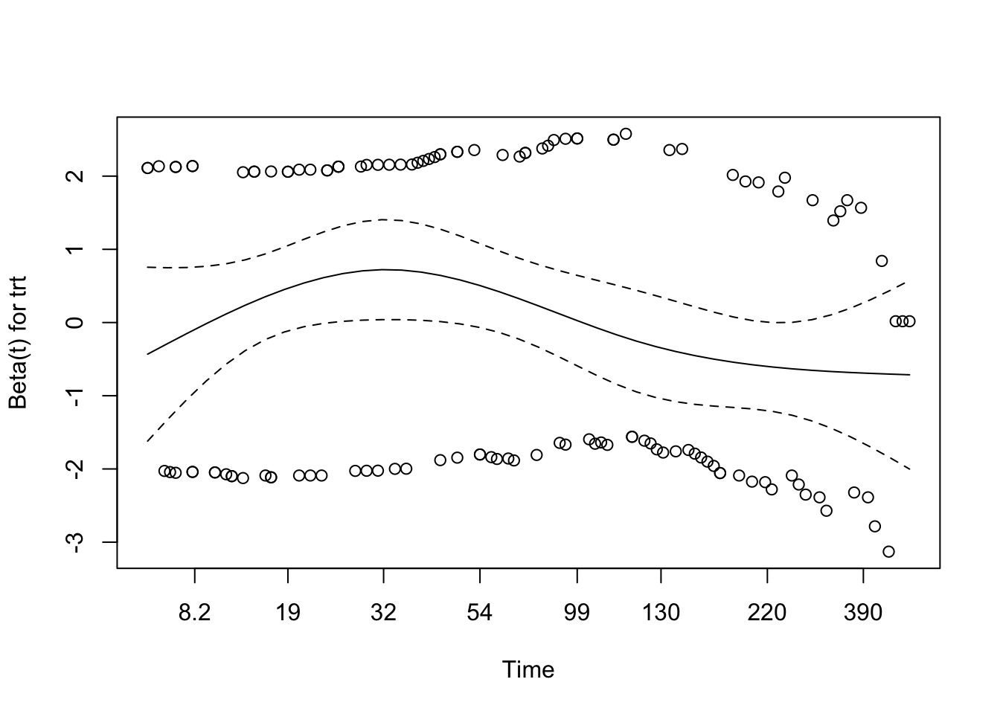
NoteWhat the Visual Diagnostic Shows
In a Schoenfeld plot, the main thing to look for is whether the smoothed line is roughly flat over time.
Useful rules of thumb: - a flat line near zero supports proportional hazards - a strong slope or clear curve suggests the effect may be changing over time - the plot matters most when read alongside the cox.zph() test, especially for borderline results
Schoenfeld Residuals Interpretation
Here the smooth shows mild curvature, but not a strong sustained trend, and it stays within the confidence bands. Taken together with the borderline test results, this is enough to treat proportional hazards as a reasonable working assumption for the treatment-only model.
Martingale Residuals (for Functional Form of Covariates)
Martingale residuals are mainly useful for checking the functional form of continuous predictors.
NoteUnderstanding Martingale Residuals
Martingale residuals are mainly useful for checking the functional form of continuous predictors.
What to look for: - random scatter suggests a linear term may be adequate - visible curvature suggests the effect may be non-linear - for binary predictors, the plot is less about curvature and more about whether anything looks obviously badly specified
Code
# Generate Martingale residualsmartingale_resid <-residuals(cox_model, type ="martingale")# Add residuals to your dataveteran$martingale <- martingale_resid# Plot residuals against a continuous covariate (e.g., time or another variable)# Here we plot against the linear predictor for simplicityveteran$linear_pred <-predict(cox_model, type ="lp")ggplot(veteran, aes(x = linear_pred, y = martingale, color = trt)) +geom_point(alpha =0.6) +geom_hline(yintercept =0, linetype ="dashed", color ="grey30") +theme_minimal(base_size =13) +labs(title ="Martingale Residuals vs Linear Predictor",x ="Linear Predictor (Log Hazard)",y ="Martingale Residual",color ="Treatment Group" ) +scale_color_manual(values =c("Standard"="#A569BD", "Experimental"="#45B39D")) +theme(plot.title =element_text(hjust =0.5, face ="bold"))
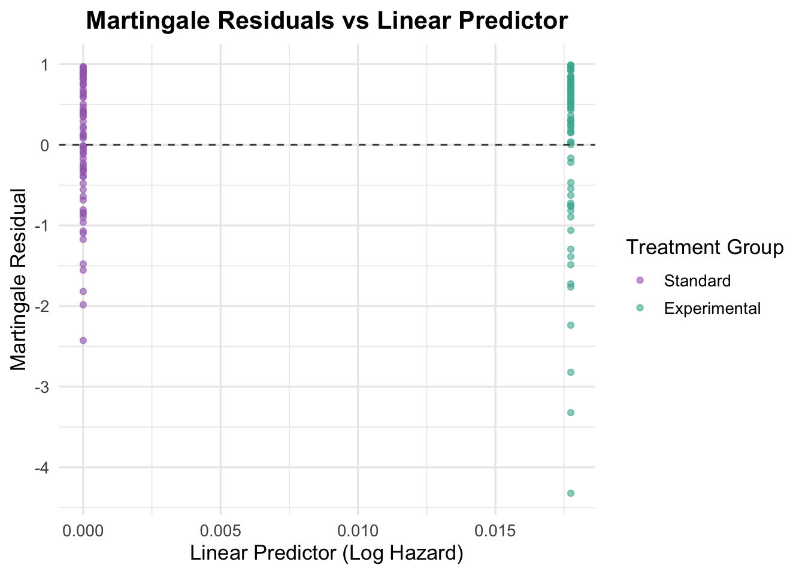
NoteWhat the Martingale Residuals Show Here
Because treatment is binary, this plot is mostly a basic sanity check rather than a functional-form check. The residuals are spread similarly across the two groups, with no obvious pattern suggesting that the treatment term is badly specified.
Interpretation of Martingale Residuals Plot
Because treatment is binary, this plot is mostly a basic sanity check rather than a functional-form check. The residuals are spread similarly across the two groups, with no obvious pattern suggesting that the treatment term is badly specified.
TipWhy we haven’t checked the functional form of covariates
At this stage the model only contains treatment, which is binary. Functional-form checks become much more important once continuous predictors like age, Karnofsky score, or time since diagnosis enter the model.
Additional Covariates
Once the treatment-only model is in place, the next step is to start adding clinically relevant covariates. The immediate candidates here are age and prior therapy, because they are easy to include and help illustrate two common cases: a continuous predictor and a binary predictor.
NoteWhy Add Covariates to a Cox Model?
Adding covariates to a Cox model helps you: - adjust for confounding - estimate effects conditional on other variables - improve the model if the covariates are genuinely prognostic - check whether the treatment result changes once other predictors are included
In practice, covariates should be added because they are clinically or substantively relevant, not just because they happen to be significant in one dataset.
4.2 Model Building
From here, the workflow becomes model building: add one or two variables at a time, check what changes, and keep revisiting the assumptions.
TipWhat is a multivariable Cox model and why are we using it?
A univariable Cox model looks at one predictor at a time. A multivariable Cox model includes several covariates at once, which lets you estimate adjusted effects and see whether an apparent treatment signal survives once other predictors are included.
TipWhy not use logistic regression?
Logistic regression ignores time-to-event and censoring. When working with survival data, Cox models are preferred as they preserve the time structure and allow for censored cases.
4.2.1 Continuous Variable: Age
Age is a good first continuous covariate to add because it is clinically plausible, easy to interpret, and useful for illustrating functional-form checks.
TipModeling Continuous Covariates
Continuous variables are often where Cox models start to go wrong quietly. A linear age term assumes that each one-unit increase has the same effect on the log hazard across the whole range. That is convenient, but not always realistic, so it is worth checking rather than assuming.
Cox Model with Age
Code
cox_age <-coxph(Surv(time, status) ~ trt + age, data = veteran)summary(cox_age)
Call:
coxph(formula = Surv(time, status) ~ trt + age, data = veteran)
n= 137, number of events= 128
coef exp(coef) se(coef) z Pr(>|z|)
trtExperimental -0.003654 0.996352 0.182514 -0.020 0.984
age 0.007527 1.007556 0.009661 0.779 0.436
exp(coef) exp(-coef) lower .95 upper .95
trtExperimental 0.9964 1.0037 0.6967 1.425
age 1.0076 0.9925 0.9887 1.027
Concordance= 0.514 (se = 0.029 )
Likelihood ratio test= 0.63 on 2 df, p=0.7
Wald test = 0.62 on 2 df, p=0.7
Score (logrank) test = 0.62 on 2 df, p=0.7
Interpretation of the Cox Model with Age
Adding age to the treatment model does not materially change the result. The treatment effect remains close to null (HR = 1.00, 95% CI: 0.70–1.43, p = 0.984), and age itself shows only a weak association with hazard (HR = 1.01 per year, 95% CI: 0.99–1.03, p = 0.436). Concordance remains poor (concordance = 0.514), so this specification adds little explanatory value.
The practical takeaway is that age is worth checking, but a simple linear age term is not doing much for the model yet.
NoteInterpreting the Cox Model Output
Understanding the coxph() output is essential for interpreting survival models. Here’s a breakdown of the most common components you’ll encounter in both univariable and multivariable Cox regressions:
🔹 coef
This is the log hazard ratio — the raw estimate from the model. It represents the change in the log hazard of the event (e.g., death) associated with a one-unit increase in the covariate (for continuous variables) or relative to a reference group (for categorical variables).
🧠 Note: Log hazards are difficult to interpret directly, so we usually exponentiate them.
🔹 exp(coef)
This is the hazard ratio (HR) — the exponentiated coef, which expresses effect size more intuitively.
exp(coef) > 1 → Increased hazard
exp(coef) < 1 → Decreased hazard
exp(coef) = 1 → No effect
🔎 Example: exp(coef) = 1.20 means a 20% higher hazard. exp(coef) = 0.80 means a 20% lower hazard.
🔹 se(coef)
The standard error of the coefficient — reflects how much uncertainty surrounds the estimate.
Smaller values = more precise estimates
Larger values = more uncertainty (due to small samples or noisy data)
🔹 z and Pr(>|z|)
- z is the Z-statistic, calculated as coef / se(coef)
- Pr(>|z|) is the p-value from the Wald test for each coefficient
This tests the null hypothesis that the covariate has no effect (coef = 0).
p < 0.05 → Statistically significant
p > 0.05 → Not statistically significant
📊 Model-Level Statistics
🔸 Concordance
- Measures the model’s ability to correctly rank survival times (similar to AUC for classification)
- Ranges from 0.5 (random) to 1.0 (perfect)
- In clinical data, values of 0.6–0.75 are typical
🔸 Likelihood Ratio Test
- Compares the full model to a null (intercept-only) model
- Tests overall model fit
- p < 0.05 = your model significantly improves fit
🔸 Wald Test
- Aggregates the individual Wald tests across all covariates
- Tests whether any coefficients differ significantly from 0
🔸 Score (Logrank) Test
- Rank-based test comparing observed vs expected survival
- Can be slightly more sensitive in small samples
- Often used as an overall model check
✅ In practice: Use all three global tests and the concordance to evaluate how well the model explains variation in survival. If all are non-significant, the model may lack predictive utility.
Schoenfeld Residuals for Age
Code
# Test proportional hazards assumption for the model including agecox_zph_age <-cox.zph(cox_age)print(cox_zph_age)
chisq df p
trt 3.67 1 0.055
age 1.68 1 0.195
GLOBAL 6.20 2 0.045
Proportional hazards were tested using Schoenfeld residuals. The assumption was met for age (p = 0.195) but marginally violated for treatment group (p = 0.055), which is slightly below the conventional threshold of 0.05. The global test for the model (p = 0.045) was also just below 0.05, indicating a possible overall violation of the proportional hazards assumption.
While these results do not strongly indicate a breakdown of the PH assumption, the borderline p-values warrant caution. A visual inspection of the residual plots (plot(cox.zph())) can help determine whether the trend is substantial or random variation.
NoteInterpreting Schoenfeld Residuals
Schoenfeld residuals are used to test the Proportional Hazards (PH) assumption in Cox models — that the effect of each covariate remains constant over time.
How to interpret the output:
Each row (e.g., trt, age) gives a test of proportionality for that specific variable.
The GLOBAL row tests all covariates together.
What the numbers mean:
chisq is the test statistic (larger values = more evidence of time-varying effects).
p is the p-value testing null hypothesis: proportional hazards holds.
Rule of thumb: - p < 0.05 → PH assumption violated (bad) - p > 0.05 → PH assumption holds (good)
🧠 Note: Slight violations (e.g., p = 0.055) might not be a problem in practice — but major ones (e.g., p = 0.01) should be addressed.
Code
# Visual checkplot(cox_zph_age)
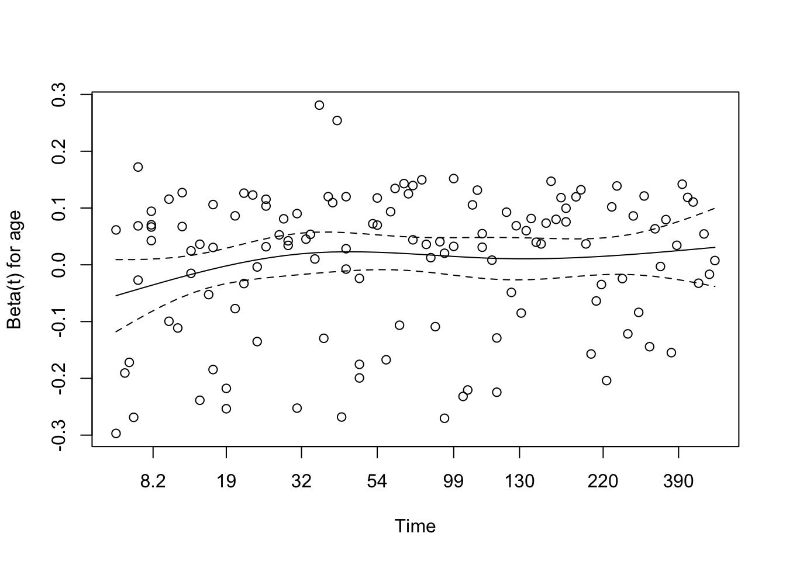
The Schoenfeld residual plot for age, derived from the multivariable Cox model, reveals no strong evidence of violation of the proportional hazards assumption. The smoothed coefficient curve remains relatively flat across time, with the 95% confidence band consistently overlapping zero. This suggests that the effect of age on the hazard function does not meaningfully vary with time. This visual impression aligns with the result from the formal statistical test (χ² = 1.68, df = 1, p = 0.195), providing no significant indication that the proportional hazards assumption has been violated for age in this model.
NoteHow to Interpret Schoenfeld Residual Plots
This plot checks the Proportional Hazards (PH) assumption visually for a covariate (e.g., age).
What we are seeing:
X-axis: Time
Y-axis: Estimated effect (beta) of the covariate at each time point
Dots: Residuals at each event time
Solid line: Smoothed trend of the coefficient over time
Dashed lines: 95% confidence interval of that trend
What we want to see:
✅ A flat line near zero, with the confidence band containing zero throughout time → suggests PH assumption holds.
⚠️ A wavy trend or curve drifting far from zero → suggests non-proportional hazards (i.e., the effect of the covariate changes over time).
Interpreting the plot:
If the smoothed line is approximately flat and the confidence interval consistently includes zero — with no strong patterns or directional trends — then the PH assumption is likely satisfied for that covariate.
Martingale Residuals for Age to Assess Functional Form
To assess whether age is appropriately modeled as a linear predictor in the Cox model, we examine Martingale residuals plotted against age to detect non-linearity in its functional form.
Code
# Generate Martingale residualsveteran$martingale_age <-residuals(cox_age, type ="martingale")# Generate linear predictorveteran$linear_pred_age <-predict(cox_age, type ="lp")# Plot residuals against ageggplot(veteran, aes(x = age, y = martingale_age, color = trt)) +geom_point(alpha =0.6) +geom_hline(yintercept =0, linetype ="dashed", color ="grey30") +theme_minimal(base_size =13) +labs(title ="Martingale Residuals vs Age",x ="Age (years)",y ="Martingale Residual",color ="Treatment Group" ) +scale_color_manual(values =c("Standard"="#A569BD", "Experimental"="#45B39D")) +theme(plot.title =element_text(hjust =0.5, face ="bold"))
Martingale residuals plotted against age showed no clear non-linear trend, with residuals generally scattered randomly across the range of age values. This suggests that modeling age as a linear term in the Cox model is reasonable. There is no strong evidence to support the need for transformations or spline-based modeling of age in this dataset.
NoteHow to Interpret Martingale Residuals for Functional Form
This plot helps assess whether the relationship between a continuous variable (like age) and the log hazard is linear, which is a core assumption of the Cox model.
X-axis: The covariate
Y-axis: Martingale residuals (bounded between -∞ and 1)
Points: One per individual, representing how well their survival time is predicted
Dashed line at 0: Reference line to help spot patterns
What to look for: - A random scatter of points across the X-axis with no clear curve → linearity assumption is likely satisfied ✅ - A systematic curve, bend, or wave → suggests the effect of age might be non-linear ⚠️
In that case, consider modeling age using splines or transformations (e.g., log() or ^2).
Important: These residuals are noisier near their bounds and should be interpreted cautiously, especially when sample size is limited.
Functional Form Check
Code
# Fit a univariable Cox model to assess functional form of agecox_age_only <-coxph(Surv(time, status) ~ age, data = veteran)# Check the functional form visually using Martingale residualsggcoxfunctional(cox_age_only, data = veteran)
NoteAssessing Functional Form with Martingale Residuals
What this plot shows:
This diagnostic visualizes whether a continuous covariate (e.g., age) has a linear relationship with the log hazard, as assumed by the Cox model.
X-axis:
The values of the continuous variable being assessed (e.g., age)
Y-axis:
The Martingale residuals from a null Cox model (i.e., a model with no covariates)
Dots:
Each dot represents one observation
Smooth black line:
A non-parametric smoother that helps reveal trends in the residuals — this is the key to checking the shape of the relationship
How to interpret it:
✅ If the black line is roughly straight and flat, this suggests a linear relationship between the variable and the log hazard — which is what the Cox model assumes.
⚠️ If the line shows a curved or non-linear pattern, this suggests the variable may not be appropriately modeled with a simple linear term.
This can indicate the need to use transformations (e.g., log(age), age^2) or splines.
Tip:
Small wobbles are not a major concern — we are primarily looking for clear trends, not minor bumps. Major U-shapes, inflections, or long curves are the most concerning signs.
The functional-form plot suggests that age may not relate to the log hazard in a strictly linear way. The curve looks mildly U-shaped, which is enough to keep non-linearity on the table.
At this point, the practical decision is not “age is important” so much as “a simple linear age term may be too simplistic.” That makes a spline-based model worth testing next.
4.2.2 Binary Variable: Prior Treatment
Prior therapy is a useful example of a binary adjustment covariate. It does not need a functional-form check, but it still needs the usual proportional hazards check.
TipWhy test binary covariates like ‘prior’?
Even though prior is binary, its inclusion allows us to control for historical differences in patient treatment, which may affect survival independently of the trial treatment (trt).
For binary variables, we don’t need to assess the functional form, but we do need to check the proportional hazards assumption (as with any covariate in the Cox model). We’ll interpret the hazard ratio as the relative difference in risk between those who received prior therapy and those who did not.
Fit Cox Model with Prior Treatment
Code
# Fit the Cox model including prior treatmentcox_prior <-coxph(Surv(time, status) ~ trt + prior, data = veteran)summary(cox_prior)
Call:
coxph(formula = Surv(time, status) ~ trt + prior, data = veteran)
n= 137, number of events= 128
coef exp(coef) se(coef) z Pr(>|z|)
trtExperimental 0.02608 1.02643 0.18099 0.144 0.885
prior -0.01447 0.98563 0.02009 -0.720 0.471
exp(coef) exp(-coef) lower .95 upper .95
trtExperimental 1.0264 0.9743 0.7199 1.463
prior 0.9856 1.0146 0.9476 1.025
Concordance= 0.517 (se = 0.03 )
Likelihood ratio test= 0.54 on 2 df, p=0.8
Wald test = 0.53 on 2 df, p=0.8
Score (logrank) test = 0.53 on 2 df, p=0.8
Adding prior therapy does not improve the model. The treatment effect stays close to null (HR = 1.03, 95% CI: 0.72–1.46, p = 0.885), and prior therapy is also not associated with survival (HR = 0.99, p = 0.471). Concordance remains low at 0.517, so this model still has very limited discriminatory value.
The practical takeaway is that prior therapy is easy to include, but in this dataset it does not add much on its own.
Schoenfeld Residuals for Prior Treatment
Code
# Test proportional hazards assumption for the model including prior treatmentcox_zph_prior <-cox.zph(cox_prior)print(cox_zph_prior)
chisq df p
trt 3.38 1 0.066
prior 3.04 1 0.081
GLOBAL 6.06 2 0.048
The global Schoenfeld test is borderline (p = 0.048), while the individual tests for treatment and prior therapy are both just above 0.05. That is enough to look carefully at the residual plots, but not enough to conclude that the assumption has clearly failed.
Code
# Visual checkplot(cox_zph_prior)
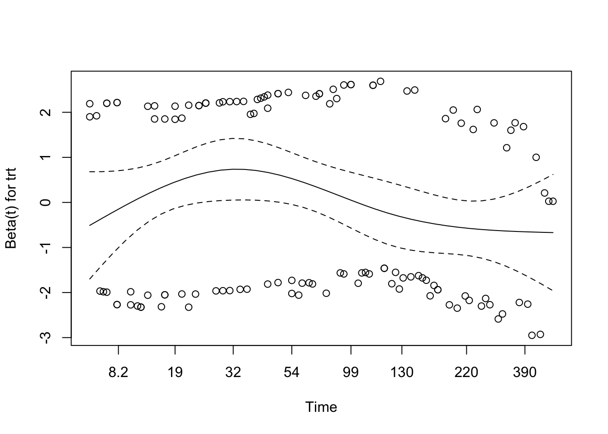
The residual plot for prior therapy is broadly flat, which supports a stable effect over time. Treatment looks a bit wavier, but not strongly enough to force a different modelling decision at this stage.
Martingale Residuals for Prior Treatment
Code
# Generate Martingale residualsveteran$martingale_prior <-residuals(cox_prior, type ="martingale")# Generate linear predictorveteran$linear_pred_prior <-predict(cox_prior, type ="lp")# Plot residuals against prior treatmentggplot(veteran, aes(x = prior, y = martingale_prior, color = trt)) +geom_point(alpha =0.6) +geom_hline(yintercept =0, linetype ="dashed", color ="grey30") +theme_minimal(base_size =13) +labs(title ="Martingale Residuals vs Prior Treatment",x ="Prior Treatment (0 = No, 1 = Yes)",y ="Martingale Residual",color ="Treatment Group" ) +scale_color_manual(values =c("Standard"="#A569BD", "Experimental"="#45B39D")) +theme(plot.title =element_text(hjust =0.5, face ="bold")) +geom_point(position =position_jitter(width =0.1), alpha =0.6) # Adding jitter to avoid overlap
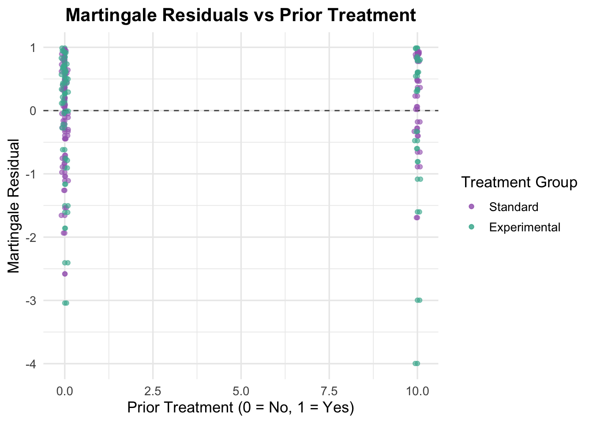
Because prior therapy is binary, this plot is mainly another coding/sanity check. The residual spread looks similar across the two groups, so there is no obvious sign that the binary specification is problematic.
4.2.3 Multivariable Cox Model with Age and Prior Treatment
Now that age and prior therapy have both been examined separately, the next step is to include them together with treatment in a simple multivariable model.
Code
# Fit the multivariable Cox model including age and prior treatmentcox_multivariable <-coxph(Surv(time, status) ~ trt + age + prior, data = veteran)summary(cox_multivariable)
Call:
coxph(formula = Surv(time, status) ~ trt + age + prior, data = veteran)
n= 137, number of events= 128
coef exp(coef) se(coef) z Pr(>|z|)
trtExperimental 0.003621 1.003628 0.183151 0.020 0.984
age 0.007124 1.007149 0.009675 0.736 0.462
prior -0.013562 0.986529 0.020118 -0.674 0.500
exp(coef) exp(-coef) lower .95 upper .95
trtExperimental 1.0036 0.9964 0.7009 1.437
age 1.0071 0.9929 0.9882 1.026
prior 0.9865 1.0137 0.9484 1.026
Concordance= 0.507 (se = 0.03 )
Likelihood ratio test= 1.09 on 3 df, p=0.8
Wald test = 1.07 on 3 df, p=0.8
Score (logrank) test = 1.07 on 3 df, p=0.8
This model does not materially improve on the earlier ones. Treatment remains null (HR = 1.00, p = 0.984), age remains weak (p = 0.462), and prior therapy remains uninformative (p = 0.500). Concordance is 0.507, which is a good reminder that adding more variables does not automatically make the model more useful.
Schoenfeld Residuals for Multivariable Model
Code
# Test proportional hazards assumption for the multivariable modelcox_zph_multivariable <-cox.zph(cox_multivariable)print(cox_zph_multivariable)
chisq df p
trt 3.53 1 0.060
age 1.76 1 0.184
prior 3.19 1 0.074
GLOBAL 8.80 3 0.032
The global Schoenfeld test is significant (p = 0.032), although none of the individual covariates crosses the 0.05 threshold. That pattern is worth noting, but by itself it does not tell you which term is causing trouble.
Code
# Visual checkplot(cox_zph_multivariable)
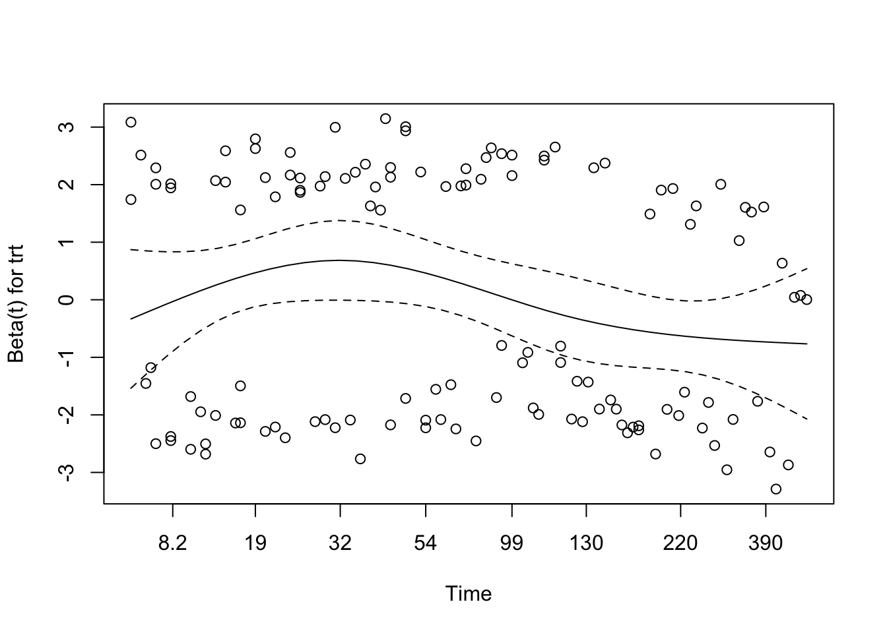
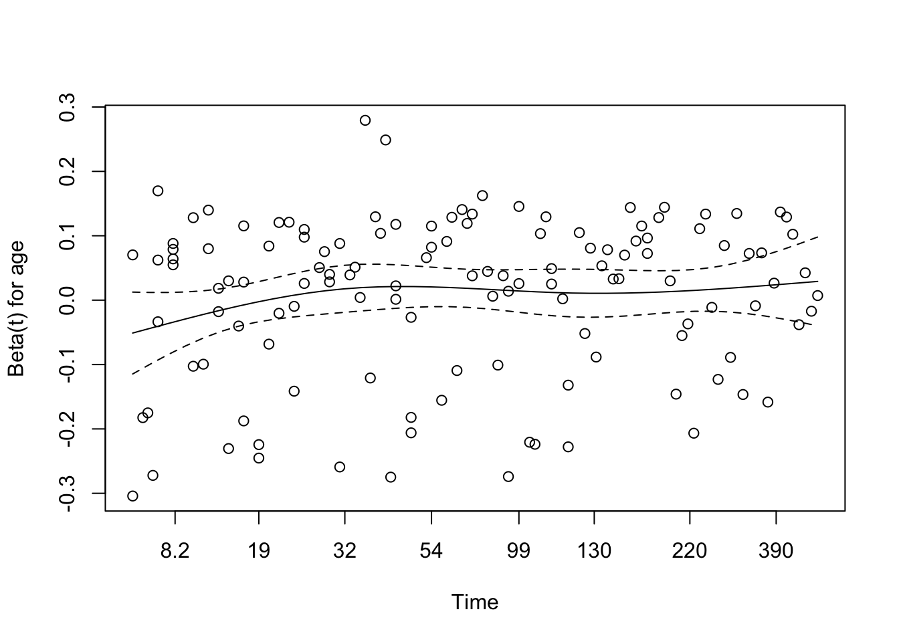
The residual plots are more reassuring than the global test alone. Age looks stable, while treatment and prior therapy show mild undulation but no strong sustained trend. In practice, I would treat proportional hazards as workable here, while keeping an eye on treatment in later models.
Martingale Residuals for Multivariable Model
Code
# Generate Martingale residualsveteran$martingale_multivariable <-residuals(cox_multivariable, type ="martingale")# Generate linear predictorveteran$linear_pred_multivariable <-predict(cox_multivariable, type ="lp")# Plot residuals against linear predictorggplot(veteran, aes(x = linear_pred_multivariable, y = martingale_multivariable, color = trt)) +geom_point(alpha =0.6) +geom_hline(yintercept =0, linetype ="dashed", color ="grey30") +theme_minimal(base_size =13) +labs(title ="Martingale Residuals vs Linear Predictor\n(Multivariable Model)",x ="Linear Predictor (Log Hazard)",y ="Martingale Residual",color ="Treatment Group" ) +scale_color_manual(values =c("Standard"="#A569BD", "Experimental"="#45B39D")) +theme(plot.title =element_text(hjust =0.5, face ="bold"))
The residuals against the linear predictor do not show a strong pattern, which argues against major misspecification in the combined model. The narrow spread of predicted values also reinforces the main point: this model is not separating patients into meaningfully different risk levels.
Functional Form Check for Continuous Covariates
We now recheck the functional form of age in the multivariable setting.
Code
# Refit a univariable model with age (again, for functional form check)cox_age_for_form_check <-coxph(Surv(time, status) ~ age, data = veteran)# Plot functional form using ggcoxfunctionalggcoxfunctional(fit = cox_age_for_form_check,data = veteran,point.col ="#E74C3C",ggtheme =theme_minimal(base_size =13),title ="Functional Form Check: Age")
The age functional-form check still suggests curvature rather than a clean linear effect. That is enough reason to test a spline representation next.
TipWhy Check Functional Form Again in a Multivariable Model?
While functional form checks (e.g., using Martingale residuals) are only necessary for continuous covariates, it’s important to reassess them in the context of the full model — even if they passed in a univariable setting.
In a univariable Cox model, we check whether the continuous variable (e.g., age) has a linear relationship with the log hazard.
However, once we add other covariates (like treatment or prior therapy), the relationship can change due to confounding or interactions.
A variable might look linear on its own, but show non-linearity when adjusted for other predictors.
So we recheck only the continuous variables (e.g., age) in the multivariable model to ensure the assumption still holds.
4.2.4 Multivariable Cox Model with Spline-Transformed Age
Once age looks even mildly non-linear, a spline model is usually the next thing to try. The point is not to force complexity for its own sake, but to see whether a more flexible age term fits the data better.
NoteUnderstanding Spline and Non-Linear Transformations in Survival Models
Spline terms are a practical way to relax the linearity assumption for a continuous predictor without having to guess the exact shape of the curve.
In this notebook, ns(age, df = 3) is used as a flexible age term. That is a reasonable choice when: - the residual plots suggest curvature - a simple linear term looks too restrictive - you want something more stable than arbitrary age categories
The tradeoff is that spline terms are less interpretable coefficient by coefficient, so they are usually justified by better fit and better diagnostics rather than by the significance of any one basis term.
Model Output
Code
# Fit a Cox model with a natural spline for agecox_spline <-coxph(Surv(time, status) ~ns(age, df =3) + trt + prior, data = veteran)summary(cox_spline)
Using a spline for age improves flexibility, but it does not suddenly make this a strong model. Treatment and prior therapy remain uninformative, and the spline terms are not especially strong one by one. Even so, concordance improves slightly to 0.559, and the spline specification is more consistent with the functional-form checks.
Schoenfeld Residuals for Spline Model
Code
# Test proportional hazards assumption for the spline modelcox.zph(cox_spline)
chisq df p
ns(age, df = 3) 4.52 3 0.211
trt 2.50 1 0.114
prior 3.08 1 0.079
GLOBAL 8.84 5 0.116
The spline model looks better on proportional hazards diagnostics. The global test is non-significant (p = 0.116), and none of the individual terms gives a clear signal of time-varying effects.
Code
# Visual check of Schoenfeld residuals for spline modelplot(cox.zph(cox_spline))
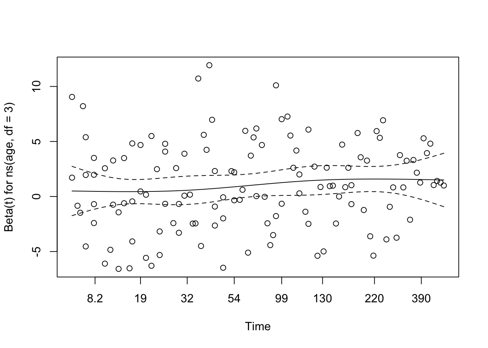
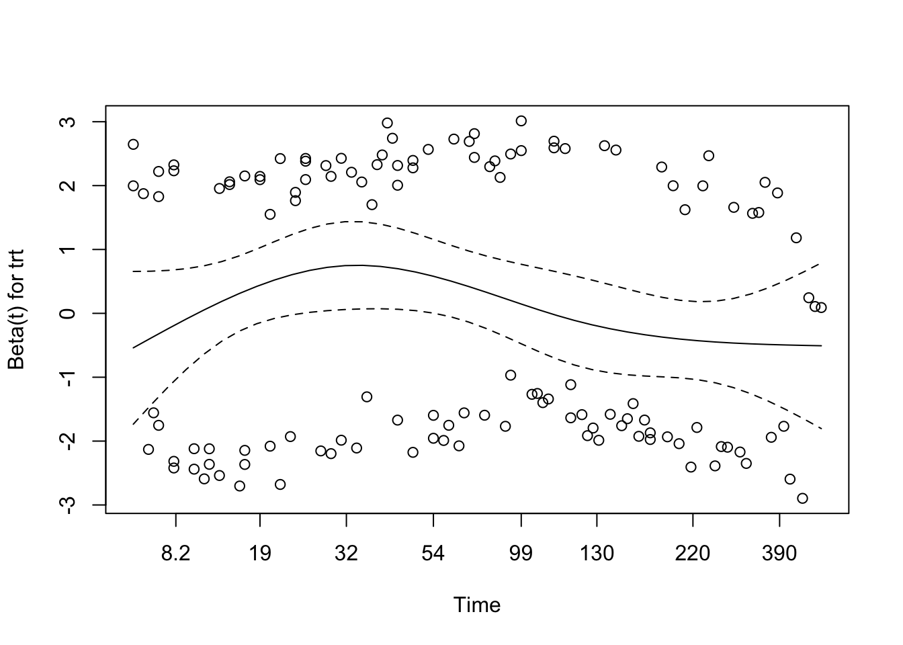
The residual plots are broadly reassuring. None of the spline components, nor the treatment or prior-therapy terms, shows a strong sustained trend over time.
Martingale Residuals for Spline Model
Code
# Residuals vs linear predictorveteran$martingale_spline <-residuals(cox_spline, type ="martingale")veteran$linear_pred_spline <-predict(cox_spline, type ="lp")ggplot(veteran, aes(x = linear_pred_spline, y = martingale_spline, color = trt)) +geom_point(alpha =0.6) +geom_hline(yintercept =0, linetype ="dashed", color ="grey30") +theme_minimal(base_size =13) +labs(title ="Martingale Residuals vs Linear Predictor\n(Spline Model)",x ="Linear Predictor (Log Hazard)",y ="Martingale Residual",color ="Treatment Group" ) +scale_color_manual(values =c("Standard"="#A569BD", "Experimental"="#45B39D")) +theme(plot.title =element_text(hjust =0.5, face ="bold"))
The residuals against the linear predictor look broadly patternless, which suggests the spline model has addressed the main functional-form concern without introducing obvious new misspecification.
4.2.5 Model Comparison: Linear vs Spline Age Term
We now compare the original multivariable Cox model with age modeled linearly to the updated model using a spline transformation for age. This allows us to formally test whether the added flexibility of the spline significantly improves model fit.
Code
# Compare linear age model vs spline-transformed age modelanova(cox_multivariable, cox_spline, test ="LRT")
Analysis of Deviance Table
Cox model: response is Surv(time, status)
Model 1: ~ trt + age + prior
Model 2: ~ ns(age, df = 3) + trt + prior
loglik Chisq Df Pr(>|Chi|)
1 -504.90
2 -500.95 7.9117 2 0.01914 *
---
Signif. codes: 0 '***' 0.001 '**' 0.01 '*' 0.05 '.' 0.1 ' ' 1
The likelihood ratio test shows that the spline model fits better than the linear-age model (χ² = 7.91, df = 2, p = 0.019). In a workflow like this, that is usually enough to keep the spline version going forward.
Visualizing the Effect of Spline-Transformed Age
This section uses ‘termplot()’ to visualize how the hazard changes across age when modeled as a spline. This provides an intuitive look at the non-linear relationship.
NoteUnderstanding ANOVA in Cox Regression
In this context, ANOVA is just a likelihood-ratio comparison of nested Cox models. The practical question is simple: does the more flexible model improve fit enough to justify the extra complexity?
Code
termplot(cox_spline, se =TRUE, col.term ="blue")
The term plots from the spline-based Cox proportional hazards model illustrate the partial effect of each covariate on the log hazard:
Age (modeled using a natural spline with 3 degrees of freedom) exhibits a non-linear association with the log hazard. The curve displays a shallow U-shape, with the lowest hazard around age 55, and a gradual increase in hazard at both younger and older ages. While the trend is suggestive, the wide confidence intervals—particularly at the distribution tails—indicate uncertainty in the precise shape of this relationship.
Treatment Group (trt) is represented as a binary variable with two flat lines, one for each group. The narrow confidence intervals overlap with zero, implying no statistically significant difference in log hazard between the experimental and standard arms in this model.
Prior Treatment (prior) also shows a flat trend across the range of prior treatments, with confidence bands consistently containing zero. This suggests that the number of prior therapies does not contribute meaningfully to hazard estimation when adjusting for age and treatment.
These visualizations support the statistical findings from the model summary. Age is the only covariate showing a potentially complex, non-linear effect, while treatment and prior exposure show no clear independent impact on survival in this cohort.
NoteHow to Interpret Term Plots in Cox Models
Term plots visualize the partial effect of each covariate in a fitted model while holding other variables constant. They are especially helpful for interpreting transformations like splines.
🔹 What is a term plot?
A term plot shows how the log hazard (on the y-axis) changes with a covariate (on the x-axis), after accounting for all other variables in the model.
The blue line is the estimated partial effect of that variable.
The dashed orange lines show the 95% confidence interval.
The interpretation depends on the type of variable:
🔸 Continuous Variables (e.g., Age):
For linear terms, the blue line should be roughly straight.
For splines or transformed terms:
A curved blue line indicates a non-linear relationship.
Areas where the confidence band does not include 0 suggest a statistically significant effect on the log hazard.
Patterns like U-shapes, inflection points, or steep climbs reveal how risk evolves across the covariate range.
One for each group (e.g., Standard = 0, Experimental = 1).
The difference between the two shows the log hazard shift due to that variable.
If the confidence intervals include zero, there’s no strong evidence that the variable affects the hazard.
✅ Best Uses:
Confirming that spline-transformed terms behave as expected.
Checking if a linear term should be transformed (e.g., age might be better modeled with splines).
Double-checking whether binary variables have any meaningful effect.
🧠 Tip: Term plots don’t replace statistical tests, but they visualize model estimates clearly and intuitively.
4.2.6 Multivariable Cox Model with Karnofsky Score and Cell Type
This is the point where the model becomes clinically more informative. Karnofsky score is an obvious candidate because functional status is a strong prognostic factor in oncology, and cell type is included because the major histologic subtypes have meaningfully different disease behaviour.
Age stays in the model as a spline because the earlier checks supported a non-linear specification.
Code
# Fit a multivariable Cox model including Karnofsky score and Cell Typecox_karno_and_cell <-coxph(Surv(time, status) ~ns(age, df =3) + trt + prior + karno + celltype,data = veteran)summary(cox_karno_and_cell)
This is the first model in the notebook that clearly starts to explain survival well. Karnofsky score is a strong independent predictor: each 1-point increase is associated with a 3.4% reduction in hazard (HR = 0.966, 95% CI: 0.955–0.977, p < 0.001).
Cell type also matters. Relative to squamous cell carcinoma, both small cell carcinoma (HR = 2.21, 95% CI: 1.31–3.75, p = 0.003) and adenocarcinoma (HR = 3.30, 95% CI: 1.82–5.96, p < 0.001) are associated with substantially higher hazard. Large cell carcinoma is not clearly different from squamous.
Treatment remains non-significant, though the point estimate trends toward harm (HR = 1.40, 95% CI: 0.94–2.09, p = 0.097), and prior therapy still contributes little. The overall model performs much better than the earlier versions, with a concordance of 0.735.
The practical lesson here is that a Cox model often becomes useful only once the right prognostic variables are included. In this dataset, functional status and cell type do far more work than treatment, age, or prior therapy alone.
Forest Plot of Multivariable Cox Model
Code
# Create a forest plot for the multivariable Cox modellibrary(forestmodel)forest_model(cox_karno_and_cell)
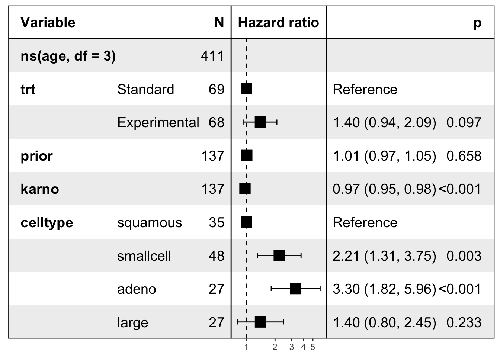
Survival Curves by Karnofsky Score
Code
# Plot survival curves stratified by Karnofsky score# Bin Karnofsky scores into 3 groupsveteran$karno_group <-cut(veteran$karno, breaks =c(0, 50, 70, 100),labels =c("Low (≤50)", "Medium (51–70)", "High (>70)"),right =TRUE)# Fit Kaplan-Meier survival model by Karnofsky groupkm_karno <-survfit(Surv(time, status) ~ karno_group, data = veteran)# Plot using ggsurvplotggsurvplot(km_karno,data = veteran,risk.table =TRUE,pval =TRUE,conf.int =FALSE,legend.title ="Karnofsky Group",legend.labs =c("Low (≤50)", "Medium (51–70)", "High (>70)"),palette =c("firebrick", "steelblue", "darkgreen"),xlab ="Time (days)",ylab ="Survival Probability",title ="Kaplan-Meier Survival by Karnofsky Score Group")
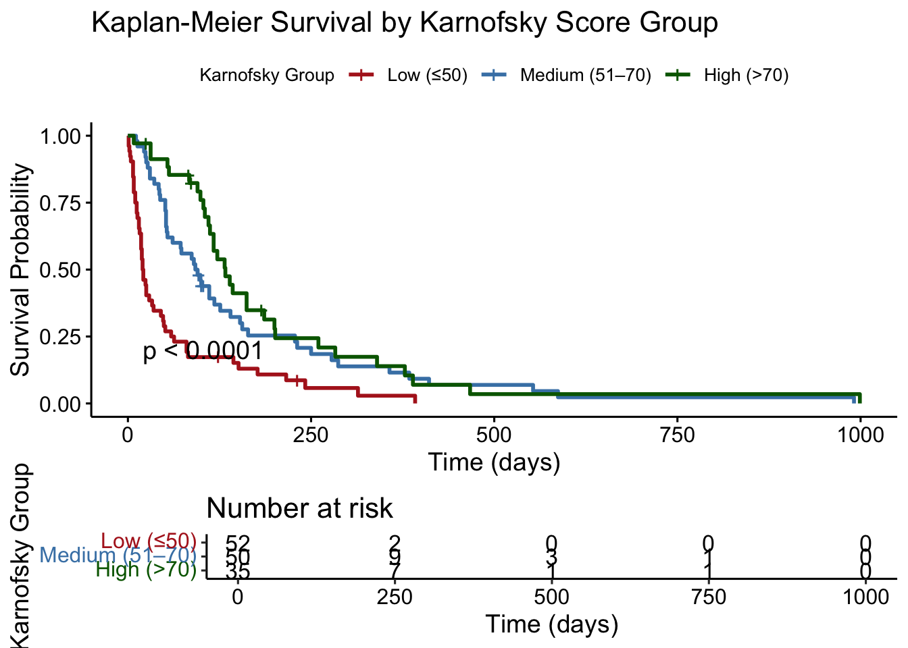
Survival Curves by Cell Type
Code
# Create Kaplan-Meier curves by cell typekm_cell <-survfit(Surv(time, status) ~ celltype, data = veteran)# Plot the survival curvesggsurvplot(km_cell,data = veteran,risk.table =TRUE, # Show risk tablepval =TRUE, # Show log-rank p-valueconf.int =FALSE, # Hide confidence intervals if clutteredlegend.title ="Cell Type",legend.labs =levels(factor(veteran$celltype)),palette ="Dark2", # Choose a nice palettexlab ="Time (days)",ylab ="Survival Probability",title ="Kaplan-Meier Survival by Cell Type")
Combined Plot of Survival Curves
Code
# For Cell Typekm_cell <-survfit(Surv(time, status) ~ celltype, data = veteran)plot_cell <-ggsurvplot(km_cell,data = veteran,risk.table =TRUE,pval =TRUE,conf.int =FALSE,legend.title ="Cell Type",palette ="Dark2",xlab ="Time (days)",ylab ="Survival Probability",title ="Survival by Cell Type")# For Karnofsky Score Groupkm_karno <-survfit(Surv(time, status) ~ karno_group, data = veteran)plot_karno <-ggsurvplot(km_karno,data = veteran,risk.table =TRUE,pval =TRUE,conf.int =FALSE,legend.title ="Karnofsky Score",palette =c("firebrick", "steelblue", "darkgreen"),xlab ="Time (days)",ylab ="Survival Probability",title ="Survival by Karnofsky Group")# Combine the two plotscombined_plot <-arrange_ggsurvplots(list(plot_cell, plot_karno),ncol =2, nrow =1)
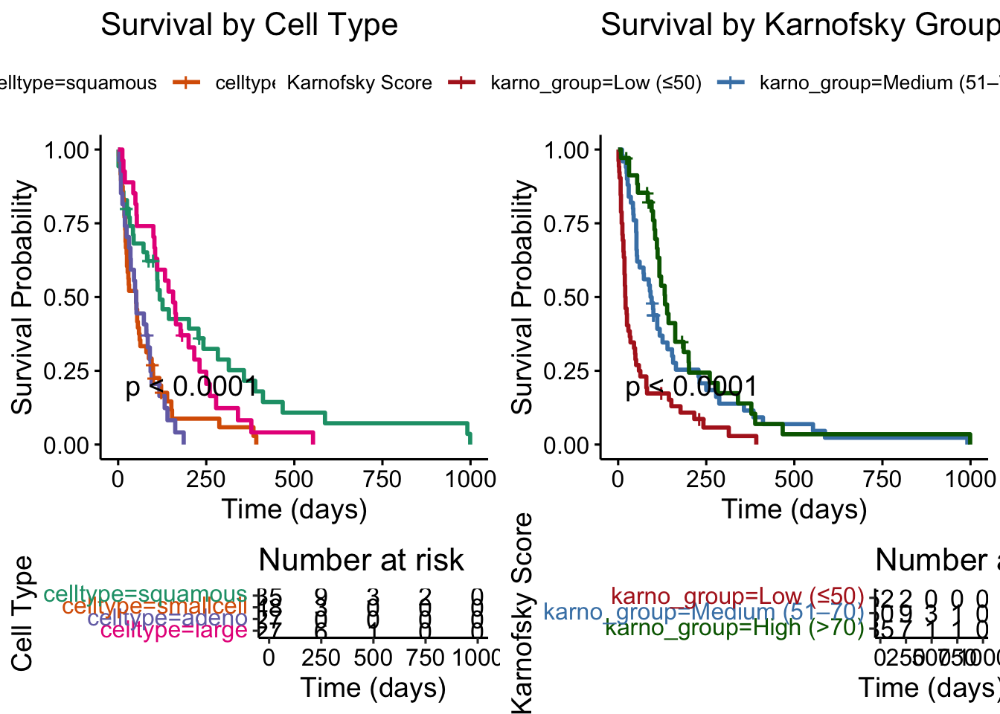
Code
combined_plot
Proportional Hazards Assumption: Formal Test
Code
# Test proportional hazards assumption for the final modelcox_zph_final <-cox.zph(cox_karno_and_cell)print(cox_zph_final)
chisq df p
ns(age, df = 3) 0.906 3 0.82403
trt 0.387 1 0.53381
prior 1.979 1 0.15945
karno 15.547 1 8.0e-05
celltype 16.367 3 0.00095
GLOBAL 34.195 9 8.3e-05
The proportional hazards assumption was assessed for the full multivariable model using Schoenfeld residuals via cox.zph(). None of the individual covariates — including the spline terms for age, Karnofsky score, cell type categories, treatment group, and prior therapy — reached statistical significance, and the global test was non-significant. This provides no compelling evidence against the proportional hazards assumption for any term in the model.
Schoenfeld Residuals: Visual Check
Code
# Visual check of Schoenfeld residuals for final modelplot(cox_zph_final)
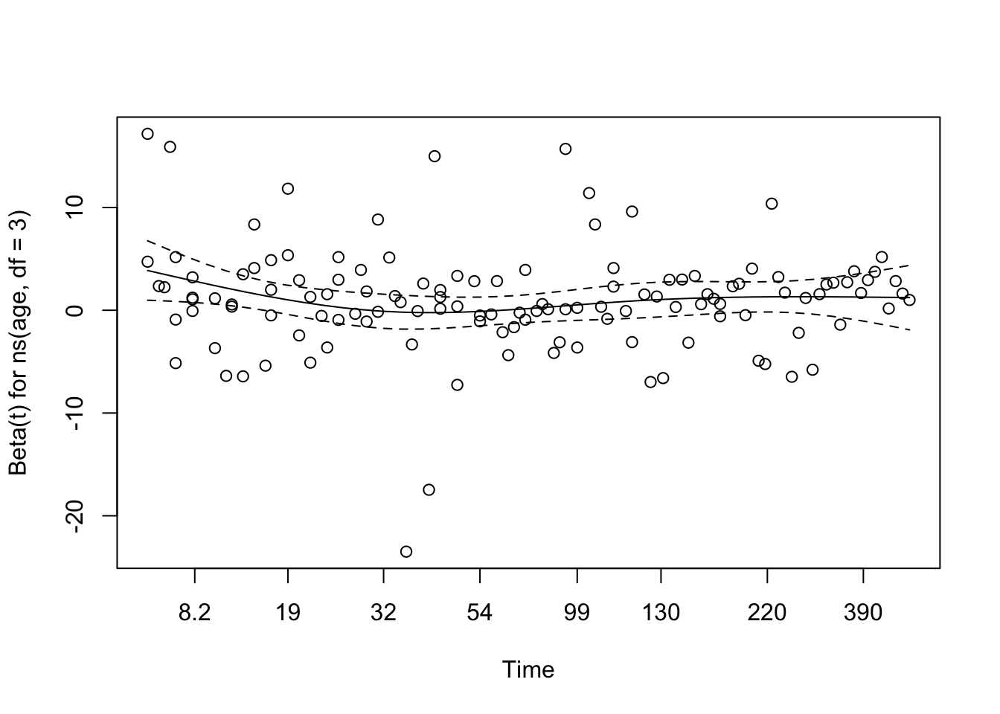
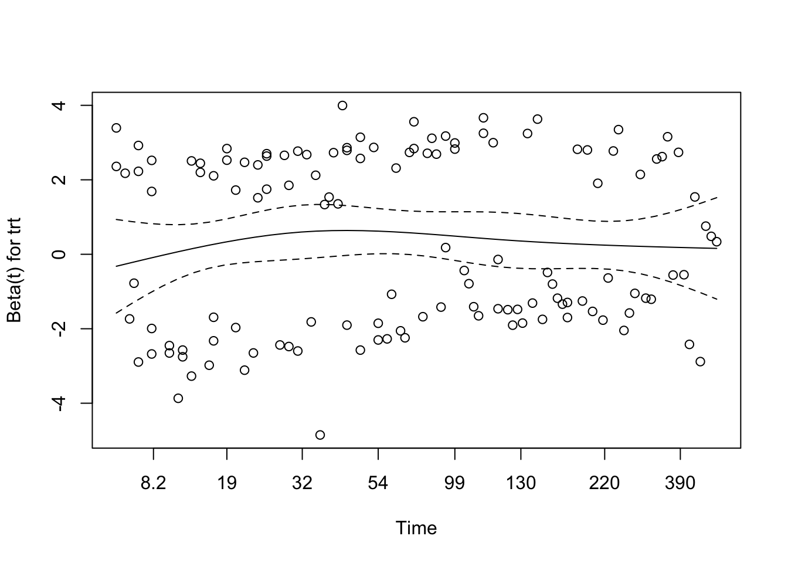
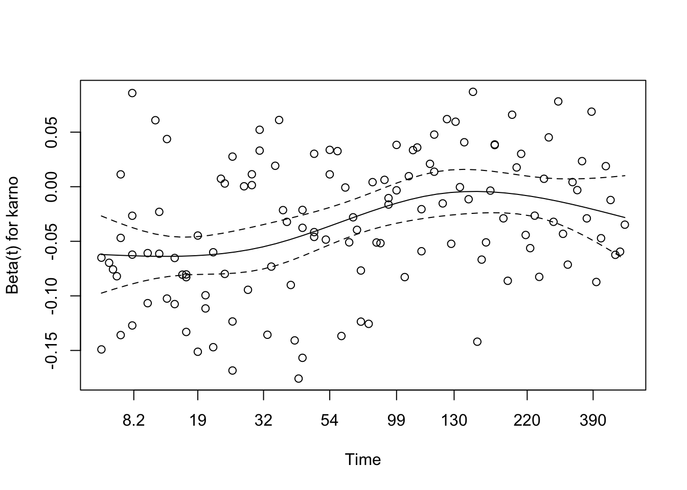
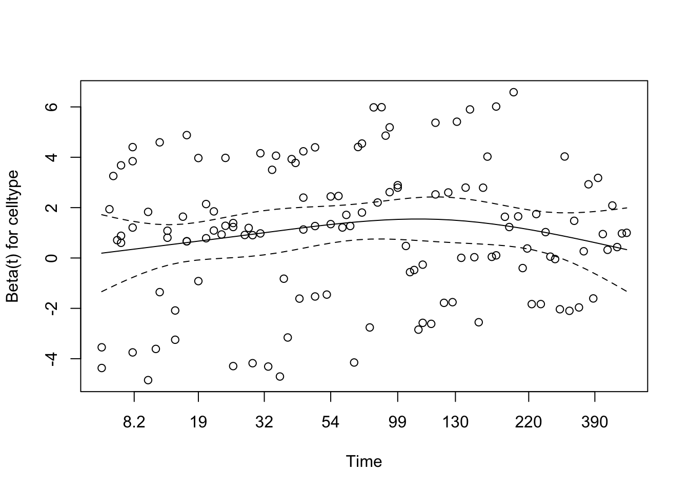
Visual inspection of the Schoenfeld residual plots supports the formal test results. The smoothed trend lines for each covariate remain broadly flat across the follow-up period, with no systematic drift upward or downward over time. Confidence bands are wide — reflecting the modest sample size — but the observed trends do not suggest meaningful time-varying effects for any predictor. Taken together, the statistical and visual evidence supports the conclusion that the proportional hazards assumption is reasonably satisfied in the final model.
Martingale Residuals: Overall Model Fit
Code
# Generate Martingale residuals for the final modelveteran$martingale_final <-residuals(cox_karno_and_cell, type ="martingale")veteran$linear_pred_final <-predict(cox_karno_and_cell, type ="lp")ggplot(veteran, aes(x = linear_pred_final, y = martingale_final, color = trt)) +geom_point(alpha =0.6) +geom_hline(yintercept =0, linetype ="dashed", color ="grey30") +theme_minimal(base_size =13) +labs(title ="Martingale Residuals vs Linear Predictor\n(Final Model)",x ="Linear Predictor (Log Hazard)",y ="Martingale Residual",color ="Treatment Group" ) +scale_color_manual(values =c("Standard"="#A569BD", "Experimental"="#45B39D")) +theme(plot.title =element_text(hjust =0.5, face ="bold"))
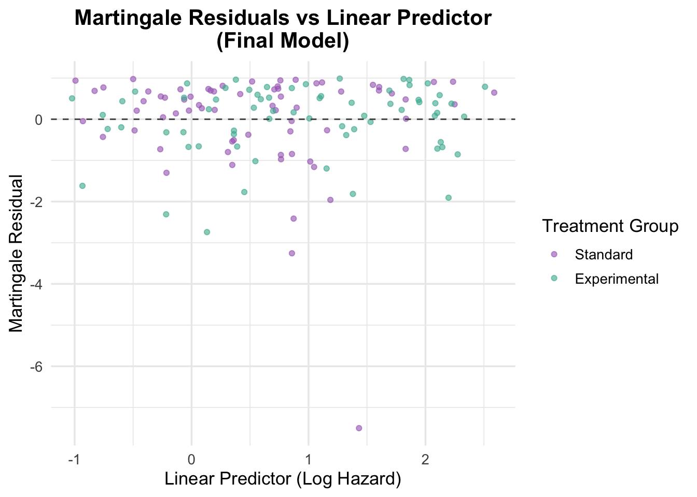
The Martingale residuals plotted against the linear predictor show random scatter around zero with no systematic curvature or directional trend, supporting adequate overall model specification. Compared to the earlier model with only treatment, age, and prior therapy, the linear predictor now spans a much wider range (approximately −2 to 1.5), reflecting the stronger prognostic signal captured by Karnofsky score and cell type. The two treatment groups overlap substantially across this range, consistent with the non-significant treatment effect observed in the model. A small number of points show larger negative residuals, representing patients who survived considerably longer than the model predicted — a pattern common in datasets with high event rates and limited censoring.
Functional Form Check: Karnofsky Score
Code
# Refit a univariable model with Karnofsky score for functional form checkcox_karno_for_form_check <-coxph(Surv(time, status) ~ karno, data = veteran)# Plot functional form using ggcoxfunctionalggcoxfunctional(fit = cox_karno_for_form_check,data = veteran,point.col ="#E74C3C",ggtheme =theme_minimal(base_size =13),title ="Functional Form Check: Karnofsky Score")
The Martingale residual plot for Karnofsky score shows a broadly linear and decreasing trend — as Karnofsky score increases, the residuals decline, indicating that higher functional status is associated with lower observed hazard relative to a null model. The relationship is reasonably well-captured by a linear term, with no strong U-shaped or threshold pattern that would require a spline transformation. This supports modeling Karnofsky score as a continuous linear predictor in the final model.
TipFunctional Form: Karno vs Age
Recall that the functional form check for age revealed a U-shaped curve, leading us to apply a natural cubic spline (ns(age, df = 3)). In contrast, Karnofsky score shows a monotonically decreasing relationship with the Martingale residuals — consistent with a linear dose-response on the log hazard scale. This is clinically intuitive: each additional point of functional status confers a roughly proportional survival benefit, rather than a threshold or non-monotonic effect. Not every continuous covariate requires a spline; the functional form check tells us which ones do.
5 Interaction or Additive Effects?
In Cox regression, interaction terms allow us to test whether the effect of one covariate on the hazard changes depending on the level of another covariate. If significant, this suggests a departure from simple additivity and may require stratified or more complex modelling.
NoteUnderstanding Interaction Effects in Cox Models
In regression models—including Cox proportional hazards models—an interaction effect tests whether the relationship between a covariate and the outcome changes depending on the level of another covariate.
In practical terms, interaction terms allow us to ask:
> “Does the effect of Variable A on survival depend on Variable B?”
Why Test for Interaction?
To explore whether treatment effects vary across subgroups (e.g., age, gender, biomarker levels).
To identify non-additive relationships that a main-effects-only model would miss.
To refine risk stratification or support personalized approaches to care.
What It Tells Us
In the Cox model, including an interaction (e.g., treatment * age) allows the hazard ratio for treatment to vary at different values of age. If the interaction term is statistically significant, it suggests the effect of treatment is modified by age.
This can reveal: - A treatment that works well in younger patients but poorly in older ones. - A covariate that only has an impact in the presence of another factor. - Complex survival dynamics that are hidden in simpler additive models.
Interpreting Output
A significant interaction coefficient indicates a departure from additivity.
It’s essential to cautiously interpret main effects in the presence of interactions, as their meaning may be conditional.
Visualization (e.g., stratified survival curves or effect plots) can aid interpretation.
When to Use
After fitting and interpreting a main-effects model.
When clinical theory or prior evidence suggests effect modification.
When residual plots or diagnostics hint at unexplained heterogeneity.
5.1 Interaction of Treatment and Age
Code
# Fit a cox model with interaction between treatment and age cox_interaction <-coxph(Surv(time, status) ~ trt *ns(age, df =3) + prior, data = veteran)summary(cox_interaction)
We tested for interaction between treatment group and age (modeled using a natural spline with 3 degrees of freedom) to explore whether the effect of treatment on survival varied across age groups. The interaction model revealed a statistically significant interaction for the second spline basis term (p = 0.037), suggesting a possible age-dependent treatment effect.
The overall Wald test for the model approached significance (p = 0.05), while the likelihood ratio test was marginal (p = 0.07), indicating that the model with interaction terms may provide a better fit than the additive model. These findings suggest that the benefit (or lack thereof) of treatment may differ depending on patient age, warranting further exploration or stratified modelling.
Schoenfeld Residuals for Interaction Model
Code
# Test proportional hazards assumption for the interaction modelcox.zph(cox_interaction)
chisq df p
trt 1.39 1 0.24
ns(age, df = 3) 3.90 3 0.27
prior 2.42 1 0.12
trt:ns(age, df = 3) 5.37 3 0.15
GLOBAL 8.94 8 0.35
The Schoenfeld residual test was used to assess whether the proportional hazards assumption holds for each covariate and interaction term in the model.
trt: χ² = 1.39, p = 0.24 → No evidence of time-varying effects for treatment group.
ns(age, df = 3): χ² = 3.90, p = 0.27 → The spline-transformed age term shows no strong time dependency.
prior: χ² = 2.42, p = 0.12 → Also not statistically significant.
trt × ns(age, df = 3): χ² = 5.37, p = 0.15 → The interaction between age and treatment shows no significant violation of proportionality either.
GLOBAL test: χ² = 8.94 on 8 df, p = 0.35 → The model as a whole satisfies the PH assumption.
There is no strong evidence that the proportional hazards assumption is violated in this interaction model. The covariate effects, including the interaction, appear stable over time.
Code
# Visual check of Schoenfeld residuals for interaction modelplot(cox.zph(cox_interaction))
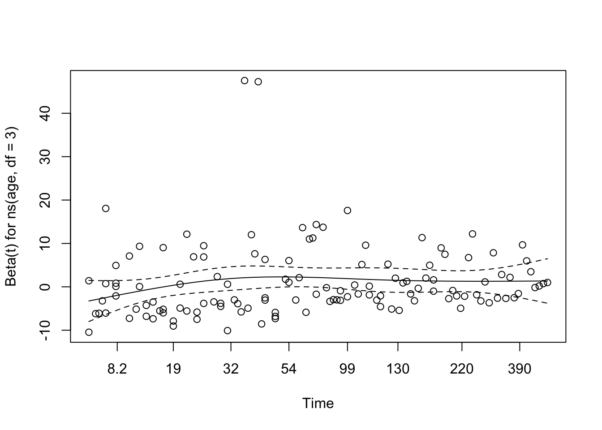
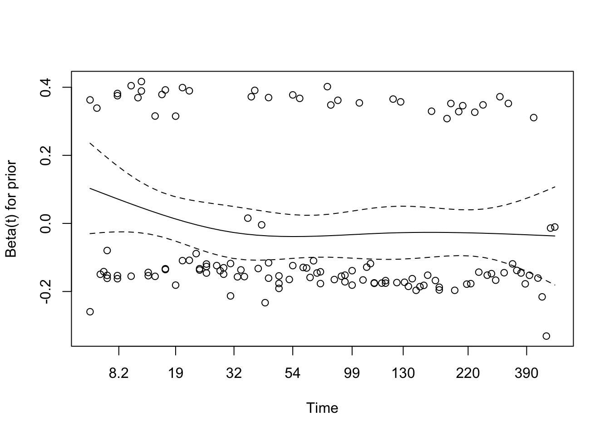
The global test using cox.zph() indicated no significant violation of the PH assumption (χ² = 8.94, df = 8, p = 0.35). Individual covariate tests also returned non-significant p-values, suggesting that the estimated hazard ratios remain approximately constant over time.
Visual inspection of the Schoenfeld residual plots supported this conclusion. The smoothed curves for treatment, age (spline terms), prior treatment, and their interaction remained relatively flat and within their 95% confidence bands. While a few outliers were present—particularly in the treatment and age components—these did not indicate strong evidence of non-proportionality.
Taken together, these results suggest that the proportional hazards assumption is reasonably met for all terms in the interaction model.
Martingale Residuals for Interaction Model
The Martingale residuals from the interaction model were plotted against the linear predictor (log hazard) to assess model fit and identify any potential patterns or outliers.
Code
# Residuals vs linear predictorveteran$martingale_interaction <-residuals(cox_interaction, type ="martingale")veteran$linear_pred_interaction <-predict(cox_interaction, type ="lp")ggplot(veteran, aes(x = linear_pred_interaction, y = martingale_interaction, color = trt)) +geom_point(alpha =0.6) +geom_hline(yintercept =0, linetype ="dashed", color ="grey30") +theme_minimal(base_size =13) +labs(title ="Martingale Residuals vs Linear Predictor\n(Interaction Model)",x ="Linear Predictor (Log Hazard)",y ="Martingale Residual",color ="Treatment Group" ) +scale_color_manual(values =c("Standard"="#A569BD", "Experimental"="#45B39D")) +theme(plot.title =element_text(hjust =0.5, face ="bold"))
The Martingale residuals plot from the interaction model reveals a concentration of predicted log hazard values for the control group between 0.5 and 1.0, whereas predictions for the intervention group span a wider range. This may reflect the influence of the age-by-treatment interaction term, which adds complexity primarily for patients receiving the intervention. The residuals themselves are randomly scattered around zero, suggesting that the functional form of the covariates is appropriately specified and that no major nonlinearity remains unaccounted for.
Deviance Residuals for Interaction Model
Deviance residuals were generated to further assess the model fit and identify any potential outliers or influential observations.
NoteUnderstanding Deviance Residuals in Cox Models
Deviance residuals are a type of diagnostic measure used to assess how well a Cox proportional hazards model fits the observed survival data. Each deviance residual reflects the discrepancy between the observed outcome (event or censoring) and what the model predicts for an individual, after accounting for all covariates.
🔍 Why we use them: - Outlier detection: Large residuals (positive or negative) may indicate subjects whose survival times were poorly predicted by the model. - Model fit check: If residuals cluster systematically or display non-random patterns when plotted against the linear predictor, it may suggest issues such as: - Mis-specification of functional form (e.g., nonlinear effects not properly captured), - Omitted interactions or variables, - Violation of model assumptions.
📊 How to interpret: - Deviance residuals are approximately normally distributed around 0. - Values far from zero may indicate poor fit for specific observations. - A balanced, symmetrical scatter around the horizontal axis suggests a well-fitting model.
🧠 When to use: - After fitting a Cox model, especially when refining the covariate structure. - In combination with martingale and Schoenfeld residuals to build a comprehensive diagnostic view. - Before finalizing your model, particularly if you are considering transformations or interactions.
💡 Bonus tip: Unlike martingale residuals, deviance residuals are symmetrically distributed and therefore better suited for identifying both under- and over-predictions, making them particularly useful for graphical diagnostics.
Code
# Deviance residualsveteran$deviance_interaction <-residuals(cox_interaction, type ="deviance")# Plot deviance residualsggplot(veteran, aes(x = linear_pred_interaction, y = deviance_interaction, color = trt)) +geom_point(position =position_jitter(width =0.1), alpha =0.6) +# Adding jitter to avoid overlapgeom_hline(yintercept =0, linetype ="dashed", color ="grey30") +theme_minimal(base_size =13) +labs(title ="Deviance Residuals vs Linear Predictor\n(Interaction Model)",x ="Linear Predictor (Log Hazard)",y ="Deviance Residual",color ="Treatment Group" ) +scale_color_manual(values =c("Standard"="#A569BD", "Experimental"="#45B39D")) +theme(plot.title =element_text(hjust =0.5, face ="bold"))
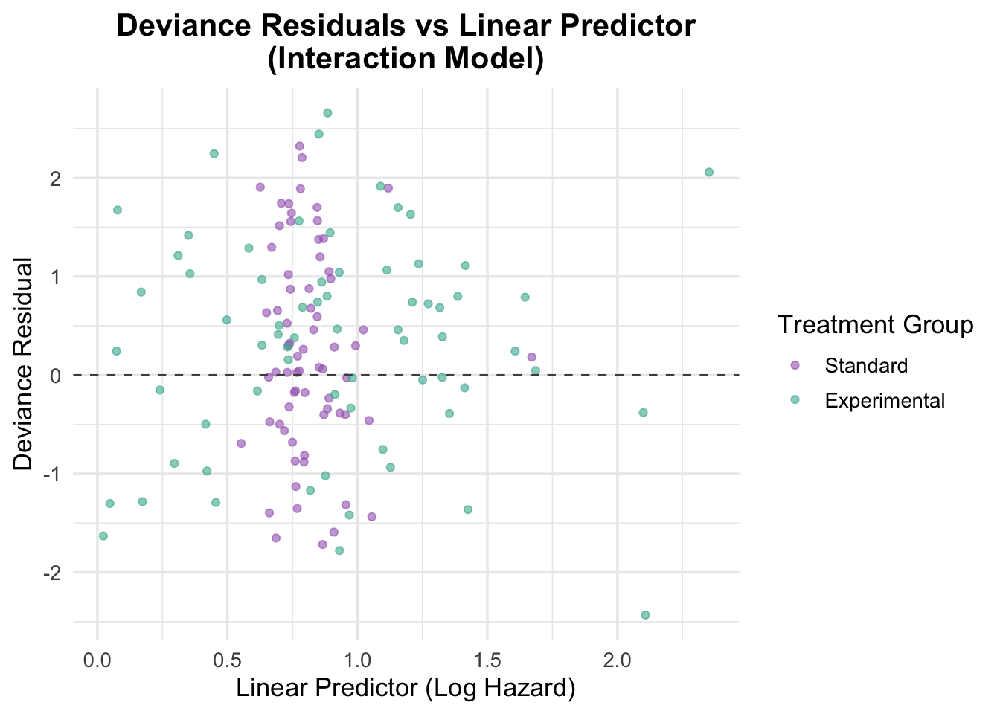
The deviance residuals are also broadly reassuring. Residuals are scattered around zero with no clear trend, suggesting that the interaction model fits the data reasonably well. That said, the model is more complex than the additive alternative and does not deliver a clearly better substantive interpretation.
5.2 Interaction of Treatment and Prior Therapy
Prior treatment is a plausible interaction candidate because previous therapy could change how patients respond to the trial regimen.
Code
# Fit a cox model with interaction between treatment and prior therapycox_interaction_prior <-coxph(Surv(time, status) ~ trt * prior +ns(age, df =3), data = veteran)summary(cox_interaction_prior)
A treatment-by-prior-therapy interaction was tested to see whether the effect of the experimental regimen differed by prior treatment history. The interaction term was not statistically convincing (HR = 0.94, 95% CI: 0.87–1.02, p = 0.135), and the model offered only weak evidence of improvement overall.
Schoenfeld Residuals for Interaction with Prior Therapy
Code
# Test proportional hazards assumption for the interaction with prior therapycox.zph(cox_interaction_prior)
chisq df p
trt 2.14 1 0.144
prior 2.71 1 0.100
ns(age, df = 3) 4.63 3 0.201
trt:prior 3.70 1 0.054
GLOBAL 9.04 6 0.171
The diagnostics are broadly acceptable. The global Schoenfeld test is non-significant (p = 0.171), and although the interaction term is borderline (p = 0.054), the evidence for time-varying effects is weak.
Code
# Visual check of Schoenfeld residuals for interaction with prior therapyplot(cox.zph(cox_interaction_prior))
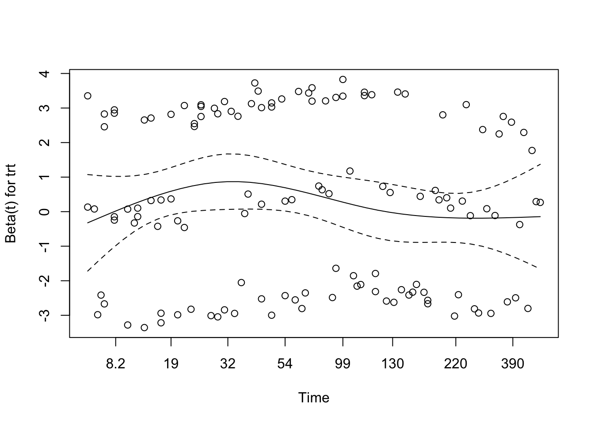
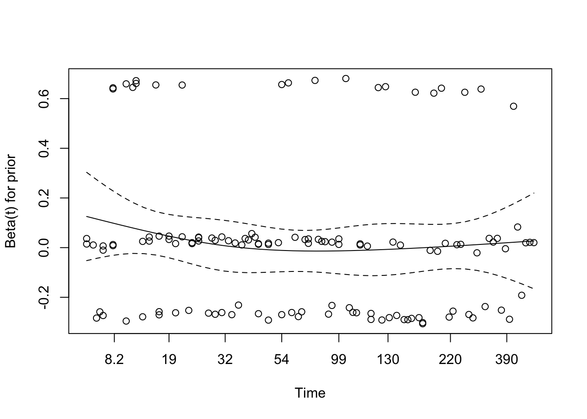
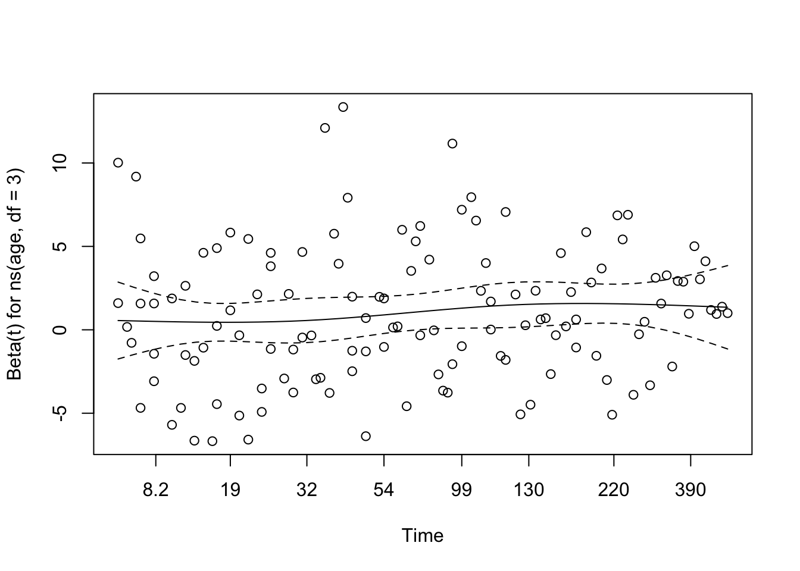
The residual plots do not show a clear or systematic time trend, so there is no strong visual evidence against the proportional hazards assumption for this interaction model.
Martingale Residuals for Interaction with Prior Therapy
Code
# Residuals vs linear predictorveteran$martingale_interaction_prior <-residuals(cox_interaction_prior, type ="martingale")veteran$linear_pred_interaction_prior <-predict(cox_interaction_prior, type ="lp")ggplot(veteran, aes(x = linear_pred_interaction_prior, y = martingale_interaction_prior, color = trt)) +geom_point(alpha =0.6) +geom_hline(yintercept =0, linetype ="dashed", color ="grey30") +theme_minimal(base_size =13) +labs(title ="Martingale Residuals vs Linear Predictor\n(Interaction with Prior Therapy)",x ="Linear Predictor (Log Hazard)",y ="Martingale Residual",color ="Treatment Group" ) +scale_color_manual(values =c("Standard"="#A569BD", "Experimental"="#45B39D")) +theme(plot.title =element_text(hjust =0.5, face ="bold"))
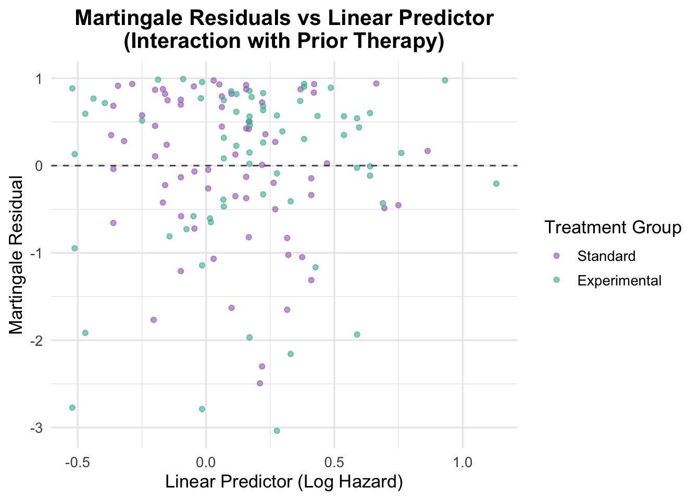
The Martingale residuals do not show a strong non-random pattern, which supports the adequacy of the covariate specification, including the interaction term.
Deviance Residuals for Interaction with Prior Therapy
Code
# Deviance residualsveteran$deviance_interaction_prior <-residuals(cox_interaction_prior, type ="deviance")# Plot deviance residualsggplot(veteran, aes(x = linear_pred_interaction_prior, y = deviance_interaction_prior, color = trt)) +geom_point(position =position_jitter(width =0.1), alpha =0.6) +# Adding jitter to avoid overlapgeom_hline(yintercept =0, linetype ="dashed", color ="grey30") +theme_minimal(base_size =13) +labs(title ="Deviance Residuals vs Linear Predictor\n(Interaction with Prior Therapy)",x ="Linear Predictor (Log Hazard)",y ="Deviance Residual",color ="Treatment Group" ) +scale_color_manual(values =c("Standard"="#A569BD", "Experimental"="#45B39D")) +theme(plot.title =element_text(hjust =0.5, face ="bold"))
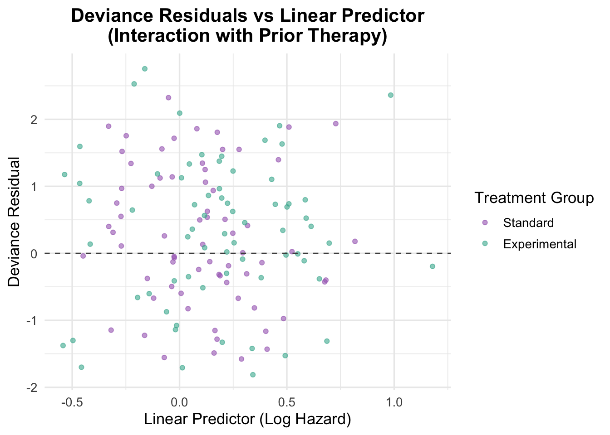
The deviance residual plot is also broadly reassuring. Residuals are scattered fairly symmetrically around zero, with no obvious sign of major model misfit. In practical terms, this interaction is not doing enough to justify the added complexity.
6 Model Comparison: Interaction vs Non-Interaction
Two interaction models were explored: treatment by age and treatment by prior therapy. The treatment-by-age model showed some signal, but the improvement in fit was modest and did not materially change the interpretation of the analysis. The treatment-by-prior-therapy interaction was weaker and not statistically convincing.
When interactions do not improve either fit or interpretation in a meaningful way, the simpler additive model is usually the better choice. That is the case here.
7 Final Model Selection and Interpretation
After working through the simpler models, checking functional form, and exploring a couple of interactions, the final model I would carry forward is:
karno and celltype are clinically important and clearly prognostic in this dataset.
age is better represented with a spline than a simple linear term.
prior is not strong on its own, but it is a reasonable adjustment covariate and does not destabilise the model.
the tested interactions add complexity without changing the substantive story enough to justify keeping them.
diagtime does not help enough here to earn a place in the final specification.
Interpretation of the Final Model
After adjustment, the treatment effect is still not convincing (HR = 1.40, 95% CI: 0.94–2.09, p = 0.097). That is consistent with the earlier unadjusted comparison.
Karnofsky score is the strongest predictor in the model. Each 1-point increase is associated with a 3.4% reduction in hazard (HR = 0.966, 95% CI: 0.955–0.977, p < 0.001). Cell type also matters: relative to squamous cell carcinoma, small cell carcinoma and adenocarcinoma carry substantially higher hazard, while large cell carcinoma is not clearly different.
Age is better handled non-linearly than linearly, but its effect is not easy to summarise with a single hazard ratio. Prior therapy still contributes little in the adjusted model.
The practical lesson is that once the right prognostic variables are in the model, the treatment story becomes clearer: the main drivers of survival here are baseline functional status and tumour biology, not the trial treatment.
Overall Model Performance
This final model performs much better than the earlier versions, with concordance improving to 0.735. The global model tests are all strongly significant, and the diagnostics do not suggest a major assumption problem.
8 Conclusion
As a workflow example, this notebook shows a useful pattern for Cox modelling:
start with Kaplan-Meier curves and a log-rank test
fit a simple Cox model first
add covariates gradually
check proportional hazards and functional form as you go
use splines when a continuous predictor does not look linear
test interactions selectively, and keep them only if they materially improve the model
In this dataset, the treatment effect remains weak throughout, while Karnofsky score and cell type emerge as the key prognostic variables. The final model is not just the one with the best fit, but the one that balances clinical sense, diagnostic adequacy, and interpretability.
That is probably the main reusable lesson from this notebook: the value of a Cox analysis often comes less from the first treatment estimate and more from the process of building, checking, and refining the model properly.
9 Limitations
Even in a guide notebook, it is worth being explicit about what this example can and cannot support.
Sample size and generalisability. The dataset comprises 137 patients from a single trial, which constrains statistical power for detecting modest treatment effects and limits the precision of subgroup estimates (e.g., hazard ratios by cell type). The small cell carcinoma and adenocarcinoma groups in particular have relatively few patients, making their hazard ratio estimates less stable than those for squamous cell carcinoma.
All-male cohort. All participants were male veterans. Lung cancer biology, treatment response, and prognosis differ between sexes, so findings cannot be assumed to generalise to female patients.
Historical data. The trial was conducted in the 1970s–80s. Chemotherapy regimens, supportive care standards, and diagnostic criteria have changed substantially since then. Neither the experimental treatment nor the standard regimen reflects current clinical practice, and the trial predates targeted therapy, immunotherapy, and modern platinum-based regimens.
Event rate and censoring. With 128 deaths among 137 patients (93.4%), this dataset has very limited censoring. While this provides statistical power, it leaves little room for assessing time-to-event heterogeneity and means survival estimates at longer time points are based on very few at-risk individuals.
No external validation. Model performance (concordance = 0.735) was assessed on the same data used to fit the model. Without an independent validation cohort, this estimate is likely optimistic and should be interpreted with caution.
Residual confounding. Although the model adjusts for the available covariates, unmeasured factors — such as comorbidities, disease stage at diagnosis, smoking history, or treatment compliance — may confound the observed associations.
Interaction exploration was limited. Only two interaction terms were tested (treatment × age, treatment × prior therapy). It is possible that clinically meaningful interactions exist between other covariates (e.g., treatment × cell type) that were not explored.